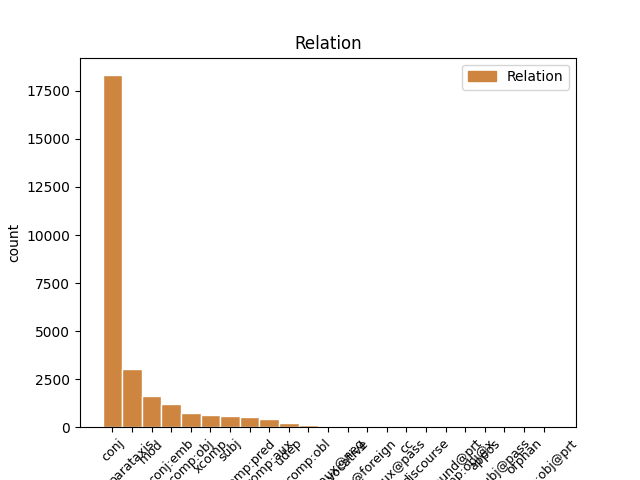
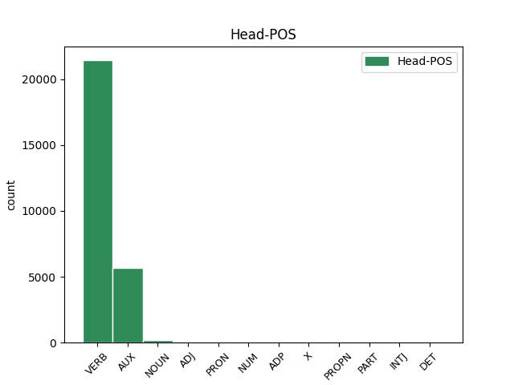

Distribution of features within this leaf


Agreement Rules sorted by frequency.
- When the dependent token is the conjunct(conj) of the head token, and the dependent token is VERB.
1 Hann _ _ _ _ 0 _ _ _
2 tók _ _ _ _ 0 _ _ _
3 ímóti _ _ _ _ 0 _ _ _
4 honum _ _ _ _ 0 _ _ _
5 , _ _ _ _ 0 _ _ _
6 gav _ _ _ _ 0 _ _ _
7 honum _ _ _ _ 0 _ _ _
8 nýggjan _ _ _ _ 0 _ _ _
9 búna _ _ _ _ 0 _ _ _
10 , _ _ _ _ 0 _ _ _
11 helt _ _ _ _ 0 _ _ _
12 veitslu _ _ _ _ 0 _ _ _
13 fyri fyri VERB _ Mood=Ind|Number=Sing|Person=3|Tense=Past|VerbForm=Fin|Voice=Act 0 _ _ _
14 honum- _ _ _ _ 0 _ _ _
15 og _ _ _ _ 0 _ _ _
16 gjørdi gjørdi VERB _ Mood=Ind|Number=Sing|Person=3|Tense=Past|VerbForm=Fin|Voice=Act 13 conj _ _
17 hann _ _ _ _ 0 _ _ _
18 til _ _ _ _ 0 _ _ _
19 umboð _ _ _ _ 0 _ _ _
20 Sítt _ _ _ _ 0 _ _ _
21 aftur _ _ _ _ 0 _ _ _
22 . _ _ _ _ 0 _ _ _
1 Hetta _ _ _ _ 0 _ _ _
2 er vere AUX _ Mood=Ind|Tense=Pres|VerbForm=Fin 0 _ _ _
3 ein _ _ _ _ 0 _ _ _
4 tvey _ _ _ _ 0 _ _ _
5 ára _ _ _ _ 0 _ _ _
6 útbúgving _ _ _ _ 0 _ _ _
7 , _ _ _ _ 0 _ _ _
8 sum _ _ _ _ 0 _ _ _
9 er vere AUX _ Mood=Ind|Tense=Pres|VerbForm=Fin 2 conj _ _
10 býtt _ _ _ _ 0 _ _ _
11 upp _ _ _ _ 0 _ _ _
12 í _ _ _ _ 0 _ _ _
13 fýra _ _ _ _ 0 _ _ _
14 semestur _ _ _ _ 0 _ _ _
15 , _ _ _ _ 0 _ _ _
16 har _ _ _ _ 0 _ _ _
17 møguleiki _ _ _ _ 0 _ _ _
18 er _ _ _ _ 0 _ _ _
19 at _ _ _ _ 0 _ _ _
20 nema _ _ _ _ 0 _ _ _
21 sær _ _ _ _ 0 _ _ _
22 kunnleika _ _ _ _ 0 _ _ _
23 í _ _ _ _ 0 _ _ _
24 uppmáting _ _ _ _ 0 _ _ _
25 , _ _ _ _ 0 _ _ _
26 viðgerð _ _ _ _ 0 _ _ _
27 av _ _ _ _ 0 _ _ _
28 uppmátingardáta _ _ _ _ 0 _ _ _
29 , _ _ _ _ 0 _ _ _
30 og _ _ _ _ 0 _ _ _
31 fyriskipan _ _ _ _ 0 _ _ _
32 og _ _ _ _ 0 _ _ _
33 stýring _ _ _ _ 0 _ _ _
34 av _ _ _ _ 0 _ _ _
35 byggiprojektum _ _ _ _ 0 _ _ _
36 . _ _ _ _ 0 _ _ _
1 Eg _ _ _ _ 0 _ _ _
2 eri verie AUX _ Mood=Ind|Tense=Pres|VerbForm=Fin 0 _ _ _
3 vónsvikin _ _ _ _ 0 _ _ _
4 av _ _ _ _ 0 _ _ _
5 VÍF _ _ _ _ 0 _ _ _
6 , _ _ _ _ 0 _ _ _
7 sum _ _ _ _ 0 _ _ _
8 eg _ _ _ _ 0 _ _ _
9 haldi _ _ _ _ 0 _ _ _
10 hevur _ _ _ _ 0 _ _ _
11 breiðasta _ _ _ _ 0 _ _ _
12 og _ _ _ _ 0 _ _ _
13 besta _ _ _ _ 0 _ _ _
14 spælarahópin _ _ _ _ 0 _ _ _
15 í _ _ _ _ 0 _ _ _
16 deildini _ _ _ _ 0 _ _ _
17 , _ _ _ _ 0 _ _ _
18 sigur sigu VERB _ Mood=Ind|Number=Sing|Person=3|Tense=Pres|VerbForm=Fin|Voice=Act 2 parataxis _ _
19 Finnur _ _ _ _ 0 _ _ _
20 millum _ _ _ _ 0 _ _ _
21 annað _ _ _ _ 0 _ _ _
22 niðanfyri _ _ _ _ 0 _ _ _
23 . _ _ _ _ 0 _ _ _
1 Tær tære VERB _ Mood=Ind|Tense=Pres|VerbForm=Fin 9 mod _ _
2 beinleiðis _ _ _ _ 0 _ _ _
3 orsøkirnar _ _ _ _ 0 _ _ _
4 til _ _ _ _ 0 _ _ _
5 at _ _ _ _ 0 _ _ _
6 gjalda _ _ _ _ 0 _ _ _
7 fyri _ _ _ _ 0 _ _ _
8 sex _ _ _ _ 0 _ _ _
9 eru verue AUX _ Mood=Ind|Tense=Pres|VerbForm=Fin 0 _ _ _
10 ymiskar _ _ _ _ 0 _ _ _
11 . _ _ _ _ 0 _ _ _
1 Sum _ _ _ _ 0 _ _ _
2 hann _ _ _ _ 0 _ _ _
3 gekk _ _ _ _ 0 _ _ _
4 , _ _ _ _ 0 _ _ _
5 slitnaði _ _ _ _ 0 _ _ _
6 onnur _ _ _ _ 0 _ _ _
7 æsin _ _ _ _ 0 _ _ _
8 úr _ _ _ _ 0 _ _ _
9 skónum _ _ _ _ 0 _ _ _
10 hjá _ _ _ _ 0 _ _ _
11 honum _ _ _ _ 0 _ _ _
12 ; _ _ _ _ 0 _ _ _
13 hann _ _ _ _ 0 _ _ _
14 settist sjan VERB _ Mood=Ind|Number=Plur|Person=2|Tense=Past|VerbForm=Fin|Voice=Act 0 _ _ _
15 niður _ _ _ _ 0 _ _ _
16 til _ _ _ _ 0 _ _ _
17 at _ _ _ _ 0 _ _ _
18 gera _ _ _ _ 0 _ _ _
19 sær _ _ _ _ 0 _ _ _
20 eina _ _ _ _ 0 _ _ _
21 nýggja _ _ _ _ 0 _ _ _
22 æs _ _ _ _ 0 _ _ _
23 og _ _ _ _ 0 _ _ _
24 legði legan VERB _ Mood=Ind|Number=Sing|Person=3|Tense=Past|VerbForm=Fin|Voice=Act 14 conj:emb _ _
25 so _ _ _ _ 0 _ _ _
26 knívin _ _ _ _ 0 _ _ _
27 frá _ _ _ _ 0 _ _ _
28 sær _ _ _ _ 0 _ _ _
29 , _ _ _ _ 0 _ _ _
30 meðan _ _ _ _ 0 _ _ _
31 hann _ _ _ _ 0 _ _ _
32 bant _ _ _ _ 0 _ _ _
33 tveingin _ _ _ _ 0 _ _ _
34 . _ _ _ _ 0 _ _ _
1 Útoyggjafelagið _ _ _ _ 0 _ _ _
2 vísir vísi VERB _ Mood=Ind|Tense=Pres|VerbForm=Fin 0 _ _ _
3 á _ _ _ _ 0 _ _ _
4 , _ _ _ _ 0 _ _ _
5 at _ _ _ _ 0 _ _ _
6 farleiðin _ _ _ _ 0 _ _ _
7 til _ _ _ _ 0 _ _ _
8 Mykinesar _ _ _ _ 0 _ _ _
9 er _ _ _ _ 0 _ _ _
10 ikki _ _ _ _ 0 _ _ _
11 væl _ _ _ _ 0 _ _ _
12 fyri _ _ _ _ 0 _ _ _
13 : _ _ _ _ 0 _ _ _
14 Í _ _ _ _ 0 _ _ _
15 fyrsta _ _ _ _ 0 _ _ _
16 lagi _ _ _ _ 0 _ _ _
17 er vere AUX _ Mood=Ind|Tense=Pres|VerbForm=Fin 2 parataxis _ _
18 títtleikin _ _ _ _ 0 _ _ _
19 lítil _ _ _ _ 0 _ _ _
20 og _ _ _ _ 0 _ _ _
21 bert _ _ _ _ 0 _ _ _
22 tveir _ _ _ _ 0 _ _ _
23 túrar _ _ _ _ 0 _ _ _
24 verða _ _ _ _ 0 _ _ _
25 sigldir _ _ _ _ 0 _ _ _
26 um _ _ _ _ 0 _ _ _
27 dagin _ _ _ _ 0 _ _ _
28 . _ _ _ _ 0 _ _ _
1 Hey _ _ _ _ 0 _ _ _
2 , _ _ _ _ 0 _ _ _
3 I _ _ _ _ 0 _ _ _
4 was _ _ _ _ 0 _ _ _
5 wondering _ _ _ _ 0 _ _ _
6 um _ _ _ _ 0 _ _ _
7 tit _ _ _ _ 0 _ _ _
8 av _ _ _ _ 0 _ _ _
9 eini _ _ _ _ 0 _ _ _
10 ella _ _ _ _ 0 _ _ _
11 aðrari _ _ _ _ 0 _ _ _
12 grund _ _ _ _ 0 _ _ _
13 liggja _ _ _ _ 0 _ _ _
14 inni _ _ _ _ 0 _ _ _
15 við _ _ _ _ 0 _ _ _
16 eini _ _ _ _ 0 _ _ _
17 female _ _ _ _ 0 _ _ _
18 mannequin _ _ _ _ 0 _ _ _
19 ( _ _ _ _ 0 _ _ _
20 líkasum _ _ _ _ 0 _ _ _
21 tær _ _ _ _ 0 _ _ _
22 man _ _ _ _ 0 _ _ _
23 brúkar _ _ _ _ 0 _ _ _
24 í _ _ _ _ 0 _ _ _
25 klædnahandlum _ _ _ _ 0 _ _ _
26 ) _ _ _ _ 0 _ _ _
27 sum _ _ _ _ 0 _ _ _
28 tit _ _ _ _ 0 _ _ _
29 vilja _ _ _ _ 0 _ _ _
30 sleppa _ _ _ _ 0 _ _ _
31 av _ _ _ _ 0 _ _ _
32 við _ _ _ _ 0 _ _ _
33 , _ _ _ _ 0 _ _ _
34 ella _ _ _ _ 0 _ _ _
35 vita vit VERB _ Mood=Ind|Tense=Pres|VerbForm=Fin 0 _ _ _
36 hvar _ _ _ _ 0 _ _ _
37 eg _ _ _ _ 0 _ _ _
38 kundi kundi VERB _ Mood=Ind|Tense=Pres|VerbForm=Fin 35 comp:obj _ _
39 skaffa _ _ _ _ 0 _ _ _
40 eina _ _ _ _ 0 _ _ _
41 tílíka _ _ _ _ 0 _ _ _
42 ? _ _ _ _ 0 _ _ _
1 Wed _ _ _ _ 0 _ _ _
2 , _ _ _ _ 0 _ _ _
3 18 _ _ _ _ 0 _ _ _
4 Dec _ _ _ _ 0 _ _ _
5 2013 _ _ _ _ 0 _ _ _
6 13:17:53 _ _ _ _ 0 _ _ _
7 GMT _ _ _ _ 0 _ _ _
8 av _ _ _ _ 0 _ _ _
9 Vagn _ _ _ _ 0 _ _ _
10 , _ _ _ _ 0 _ _ _
11 89617 _ _ _ _ 0 _ _ _
12 ferðir ferðir VERB _ Mood=Ind|Tense=Pres|VerbForm=Fin 0 _ _ _
13 sætt _ _ _ _ 0 _ _ _
14 Hósdagin _ _ _ _ 0 _ _ _
15 verða _ _ _ _ 0 _ _ _
16 tveir _ _ _ _ 0 _ _ _
17 leikir _ _ _ _ 0 _ _ _
18 leiktir leikti VERB _ Mood=Ind|Tense=Pres|VerbForm=Fin 12 xcomp _ _
19 í _ _ _ _ 0 _ _ _
20 Fuglafirði _ _ _ _ 0 _ _ _
21 . _ _ _ _ 0 _ _ _
1 Hetta _ _ _ _ 0 _ _ _
2 er _ _ _ _ 0 _ _ _
3 ein _ _ _ _ 0 _ _ _
4 tvey _ _ _ _ 0 _ _ _
5 ára _ _ _ _ 0 _ _ _
6 útbúgving _ _ _ _ 0 _ _ _
7 , _ _ _ _ 0 _ _ _
8 sum _ _ _ _ 0 _ _ _
9 er _ _ _ _ 0 _ _ _
10 býtt _ _ _ _ 0 _ _ _
11 upp _ _ _ _ 0 _ _ _
12 í _ _ _ _ 0 _ _ _
13 fýra _ _ _ _ 0 _ _ _
14 semestur _ _ _ _ 0 _ _ _
15 , _ _ _ _ 0 _ _ _
16 har _ _ _ _ 0 _ _ _
17 møguleiki _ _ _ _ 0 _ _ _
18 er vere AUX _ Mood=Ind|Tense=Pres|VerbForm=Fin 0 _ _ _
19 at _ _ _ _ 0 _ _ _
20 nema _ _ _ _ 0 _ _ _
21 sær sære VERB _ Mood=Ind|Tense=Pres|VerbForm=Fin 18 comp:pred _ _
22 kunnleika _ _ _ _ 0 _ _ _
23 í _ _ _ _ 0 _ _ _
24 uppmáting _ _ _ _ 0 _ _ _
25 , _ _ _ _ 0 _ _ _
26 viðgerð _ _ _ _ 0 _ _ _
27 av _ _ _ _ 0 _ _ _
28 uppmátingardáta _ _ _ _ 0 _ _ _
29 , _ _ _ _ 0 _ _ _
30 og _ _ _ _ 0 _ _ _
31 fyriskipan _ _ _ _ 0 _ _ _
32 og _ _ _ _ 0 _ _ _
33 stýring _ _ _ _ 0 _ _ _
34 av _ _ _ _ 0 _ _ _
35 byggiprojektum _ _ _ _ 0 _ _ _
36 . _ _ _ _ 0 _ _ _
1 Avgerð _ _ _ _ 0 _ _ _
2 um _ _ _ _ 0 _ _ _
3 at _ _ _ _ 0 _ _ _
4 taka _ _ _ _ 0 _ _ _
5 HSF _ _ _ _ 0 _ _ _
6 av _ _ _ _ 0 _ _ _
7 krevur _ _ _ _ 0 _ _ _
8 meiriluta _ _ _ _ 0 _ _ _
9 upp _ _ _ _ 0 _ _ _
10 á _ _ _ _ 0 _ _ _
11 2/3 _ _ _ _ 0 _ _ _
12 av _ _ _ _ 0 _ _ _
13 øllum _ _ _ _ 0 _ _ _
14 limum _ _ _ _ 0 _ _ _
15 í _ _ _ _ 0 _ _ _
16 HSF _ _ _ _ 0 _ _ _
17 , _ _ _ _ 0 _ _ _
18 og _ _ _ _ 0 _ _ _
19 avgerð _ _ _ _ 0 _ _ _
20 skal skulle AUX _ Mood=Ind|Tense=Pres|VerbForm=Fin 0 _ _ _
21 takast _ _ _ _ 0 _ _ _
22 á _ _ _ _ 0 _ _ _
23 einum _ _ _ _ 0 _ _ _
24 aðalfundi _ _ _ _ 0 _ _ _
25 , _ _ _ _ 0 _ _ _
26 ið _ _ _ _ 0 _ _ _
27 er vere AUX _ Mood=Ind|Number=Sing|Person=3|Tense=Pres|VerbForm=Fin|Voice=Act 20 conj:emb _ _
28 serliga _ _ _ _ 0 _ _ _
29 innkallaður _ _ _ _ 0 _ _ _
30 til _ _ _ _ 0 _ _ _
31 endamálið _ _ _ _ 0 _ _ _
32 . _ _ _ _ 0 _ _ _
1 Eitt _ _ _ _ 0 _ _ _
2 lítið _ _ _ _ 0 _ _ _
3 sindur sindu VERB _ Mood=Ind|Number=Plur|Person=3|Tense=Pres|VerbForm=Fin|Voice=Act 5 subj _ _
4 hægri _ _ _ _ 0 _ _ _
5 eru verue AUX _ Mood=Ind|Number=Plur|Person=3|Tense=Pres|VerbForm=Fin|Voice=Act 0 _ _ _
6 JHR _ _ _ _ 0 _ _ _
7 Entreprenørar _ _ _ _ 0 _ _ _
8 við _ _ _ _ 0 _ _ _
9 1,494 _ _ _ _ 0 _ _ _
10 mió _ _ _ _ 0 _ _ _
11 . _ _ _ _ 0 _ _ _
1 Vit vit AUX _ Mood=Ind|Number=Sing|Person=2|Tense=Pres|VerbForm=Fin|Voice=Act 0 _ _ _
2 skulu skulus VERB _ Evident=Fh|Mood=Ind|Number=Sing|Person=1|Polarity=Pos|Tense=Pres|VerbForm=Fin|Voice=Act 1 comp:aux _ _
3 vera _ _ _ _ 0 _ _ _
4 talspersónar _ _ _ _ 0 _ _ _
5 hjá _ _ _ _ 0 _ _ _
6 teimum _ _ _ _ 0 _ _ _
7 , _ _ _ _ 0 _ _ _
8 sum _ _ _ _ 0 _ _ _
9 vit _ _ _ _ 0 _ _ _
10 arbeiða _ _ _ _ 0 _ _ _
11 við _ _ _ _ 0 _ _ _
12 , _ _ _ _ 0 _ _ _
13 segði _ _ _ _ 0 _ _ _
14 Benny _ _ _ _ 0 _ _ _
15 Andersen _ _ _ _ 0 _ _ _
16 . _ _ _ _ 0 _ _ _
1 Síðan _ _ _ _ 0 _ _ _
2 tá bí VERB _ Mood=Ind|Tense=Pres 0 _ _ _
3 eru erun AUX _ Mood=Ind|Tense=Pres|VerbForm=Fin 2 xcomp _ _
4 PE _ _ _ _ 0 _ _ _
5 - _ _ _ _ 0 _ _ _
6 handlar _ _ _ _ 0 _ _ _
7 komnir _ _ _ _ 0 _ _ _
8 í _ _ _ _ 0 _ _ _
9 Norðragøtu _ _ _ _ 0 _ _ _
10 í _ _ _ _ 0 _ _ _
11 2003 _ _ _ _ 0 _ _ _
12 , _ _ _ _ 0 _ _ _
13 á _ _ _ _ 0 _ _ _
14 Skála _ _ _ _ 0 _ _ _
15 í _ _ _ _ 0 _ _ _
16 2005 _ _ _ _ 0 _ _ _
17 , _ _ _ _ 0 _ _ _
18 í _ _ _ _ 0 _ _ _
19 Sørvági _ _ _ _ 0 _ _ _
20 í _ _ _ _ 0 _ _ _
21 2006 _ _ _ _ 0 _ _ _
22 og _ _ _ _ 0 _ _ _
23 í _ _ _ _ 0 _ _ _
24 Sigmundargøtu _ _ _ _ 0 _ _ _
25 mitt _ _ _ _ 0 _ _ _
26 í _ _ _ _ 0 _ _ _
27 Havn _ _ _ _ 0 _ _ _
28 í _ _ _ _ 0 _ _ _
29 2008 _ _ _ _ 0 _ _ _
30 . _ _ _ _ 0 _ _ _
1 Munurin _ _ _ _ 0 _ _ _
2 er vere VERB _ Mood=Ind|Tense=Pres|VerbForm=Fin 0 _ _ _
3 bara _ _ _ _ 0 _ _ _
4 hvussu _ _ _ _ 0 _ _ _
5 kappingarnar _ _ _ _ 0 _ _ _
6 eru verue AUX _ Mood=Ind|Tense=Pres|VerbForm=Fin 2 mod _ _
7 skipaðar _ _ _ _ 0 _ _ _
8 , _ _ _ _ 0 _ _ _
9 og _ _ _ _ 0 _ _ _
10 har _ _ _ _ 0 _ _ _
11 eri _ _ _ _ 0 _ _ _
12 eg _ _ _ _ 0 _ _ _
13 100 _ _ _ _ 0 _ _ _
14 % _ _ _ _ 0 _ _ _
15 einigur _ _ _ _ 0 _ _ _
16 í _ _ _ _ 0 _ _ _
17 at _ _ _ _ 0 _ _ _
18 Pro _ _ _ _ 0 _ _ _
19 Gaming _ _ _ _ 0 _ _ _
20 er _ _ _ _ 0 _ _ _
21 betri _ _ _ _ 0 _ _ _
22 . _ _ _ _ 0 _ _ _
1 Vary _ _ _ _ 0 _ _ _
2 : _ _ _ _ 0 _ _ _
3 Accept _ _ _ _ 0 _ _ _
4 - _ _ _ _ 0 _ _ _
5 Encoding _ _ _ _ 0 _ _ _
6 Date _ _ _ _ 0 _ _ _
7 : _ _ _ _ 0 _ _ _
8 Tue _ _ _ _ 0 _ _ _
9 , _ _ _ _ 0 _ _ _
10 27 _ _ _ _ 0 _ _ _
11 Jan _ _ _ _ 0 _ _ _
12 2015 _ _ _ _ 0 _ _ _
13 08:03:14 _ _ _ _ 0 _ _ _
14 GMT _ _ _ _ 0 _ _ _
15 Connection _ _ _ _ 0 _ _ _
16 : _ _ _ _ 0 _ _ _
17 close _ _ _ _ 0 _ _ _
18 Ministry _ _ _ _ 0 _ _ _
19 of _ _ _ _ 0 _ _ _
20 education _ _ _ _ 0 _ _ _
21 , _ _ _ _ 0 _ _ _
22 research _ _ _ _ 0 _ _ _
23 and _ _ _ _ 0 _ _ _
24 culture _ _ _ _ 0 _ _ _
25 Niðan _ _ _ _ 0 _ _ _
26 fyri _ _ _ _ 0 _ _ _
27 er vere VERB _ Mood=Ind|Number=Sing|Person=3|Shared=Yes|Tense=Pres|VerbForm=Fin|Voice=Act 0 _ _ _
28 yvirlit _ _ _ _ 0 _ _ _
29 yvir _ _ _ _ 0 _ _ _
30 lógir _ _ _ _ 0 _ _ _
31 , _ _ _ _ 0 _ _ _
32 ið _ _ _ _ 0 _ _ _
33 Mentamálaráðið _ _ _ _ 0 _ _ _
34 fyrisitur fyrisitur NOUN _ Mood=Ind|Number=Sing|Person=3|Tense=Pres|VerbForm=Fin|Voice=Act 27 conj _ _
35 . _ _ _ _ 0 _ _ _
1 Expires _ _ _ _ 0 _ _ _
2 : _ _ _ _ 0 _ _ _
3 Tue _ _ _ _ 0 _ _ _
4 , _ _ _ _ 0 _ _ _
5 27 _ _ _ _ 0 _ _ _
6 Jan _ _ _ _ 0 _ _ _
7 2015 _ _ _ _ 0 _ _ _
8 13:20:06 _ _ _ _ 0 _ _ _
9 GMT _ _ _ _ 0 _ _ _
10 Cache _ _ _ _ 0 _ _ _
11 - _ _ _ _ 0 _ _ _
12 control _ _ _ _ 0 _ _ _
13 : _ _ _ _ 0 _ _ _
14 Private _ _ _ _ 0 _ _ _
15 Longu _ _ _ _ 0 _ _ _
16 komandi _ _ _ _ 0 _ _ _
17 vikuskifti _ _ _ _ 0 _ _ _
18 byrja _ _ _ _ 0 _ _ _
19 summarlegurnar _ _ _ _ 0 _ _ _
20 í _ _ _ _ 0 _ _ _
21 Zarepta _ _ _ _ 0 _ _ _
22 , _ _ _ _ 0 _ _ _
23 har ha VERB _ Mood=Ind|Tense=Pres|VerbForm=Fin 0 _ _ _
24 stóra _ _ _ _ 0 _ _ _
25 ungdómslegan _ _ _ _ 0 _ _ _
26 er vere AUX _ Mood=Ind|Tense=Pres|VerbForm=Fin 23 comp:obj _ _
27 tann _ _ _ _ 0 _ _ _
28 fyrsta _ _ _ _ 0 _ _ _
29 í _ _ _ _ 0 _ _ _
30 røðini _ _ _ _ 0 _ _ _
31 . _ _ _ _ 0 _ _ _
1 Og _ _ _ _ 0 _ _ _
2 tá _ _ _ _ 0 _ _ _
3 vit _ _ _ _ 0 _ _ _
4 við _ _ _ _ 0 _ _ _
5 eitt _ _ _ _ 0 _ _ _
6 høvi _ _ _ _ 0 _ _ _
7 , _ _ _ _ 0 _ _ _
8 sum _ _ _ _ 0 _ _ _
9 hetta _ _ _ _ 0 _ _ _
10 síggja _ _ _ _ 0 _ _ _
11 , _ _ _ _ 0 _ _ _
12 at _ _ _ _ 0 _ _ _
13 hugurin _ _ _ _ 0 _ _ _
14 áræðið _ _ _ _ 0 _ _ _
15 og _ _ _ _ 0 _ _ _
16 verksetanarandi _ _ _ _ 0 _ _ _
17 kemur _ _ _ _ 0 _ _ _
18 frá _ _ _ _ 0 _ _ _
19 okkara _ _ _ _ 0 _ _ _
20 unga _ _ _ _ 0 _ _ _
21 ættarliði _ _ _ _ 0 _ _ _
22 , _ _ _ _ 0 _ _ _
23 so _ _ _ _ 0 _ _ _
24 er vere VERB _ Mood=Ind|Number=Sing|Person=3|Tense=Pres|VerbForm=Fin|Voice=Act 0 _ _ _
25 tað _ _ _ _ 0 _ _ _
26 okkara _ _ _ _ 0 _ _ _
27 sterkasta _ _ _ _ 0 _ _ _
28 “ _ _ _ _ 0 _ _ _
29 svør svør NOUN _ Mood=Ind|Number=Sing|Person=3|Tense=Pres|VerbForm=Fin|Voice=Act 24 subj _ _
30 ” _ _ _ _ 0 _ _ _
31 og _ _ _ _ 0 _ _ _
32 borgar _ _ _ _ 0 _ _ _
33 tað _ _ _ _ 0 _ _ _
34 fyri _ _ _ _ 0 _ _ _
35 einari _ _ _ _ 0 _ _ _
36 bjartari _ _ _ _ 0 _ _ _
37 framtíð _ _ _ _ 0 _ _ _
38 ! _ _ _ _ 0 _ _ _
1 2011 _ _ _ _ 0 _ _ _
2 - _ _ _ _ 0 _ _ _
3 08 _ _ _ _ 0 _ _ _
4 - _ _ _ _ 0 _ _ _
5 19 _ _ _ _ 0 _ _ _
6 at _ _ _ _ 0 _ _ _
7 11:49 _ _ _ _ 0 _ _ _
8 AM _ _ _ _ 0 _ _ _
9 - _ _ _ _ 0 _ _ _
10 Hammerhov _ _ _ _ 0 _ _ _
11 : _ _ _ _ 0 _ _ _
12 Eri verie AUX _ Mood=Ind|Tense=Pres|VerbForm=Fin 0 _ _ _
13 eg _ _ _ _ 0 _ _ _
14 hin _ _ _ _ 0 _ _ _
15 einasti _ _ _ _ 0 _ _ _
16 sum _ _ _ _ 0 _ _ _
17 er vere AUX _ Mood=Ind|Tense=Pres|VerbForm=Fin 12 comp:pred _ _
18 skuffadur _ _ _ _ 0 _ _ _
19 av _ _ _ _ 0 _ _ _
20 DotA2 _ _ _ _ 0 _ _ _
21 ? _ _ _ _ 0 _ _ _
1 Har ha VERB _ Mood=Ind|Tense=Pres|VerbForm=Fin 0 _ _ _
2 er vere AUX _ Mood=Ind|Tense=Pres|VerbForm=Fin 1 subj _ _
3 svakliga _ _ _ _ 0 _ _ _
4 feitt _ _ _ _ 0 _ _ _
5 rundanum _ _ _ _ 0 _ _ _
6 allastanid _ _ _ _ 0 _ _ _
7 Eg _ _ _ _ 0 _ _ _
8 havi _ _ _ _ 0 _ _ _
9 kopiera _ _ _ _ 0 _ _ _
10 nakrar _ _ _ _ 0 _ _ _
11 bygningar _ _ _ _ 0 _ _ _
12 yvir _ _ _ _ 0 _ _ _
13 á _ _ _ _ 0 _ _ _
14 eina _ _ _ _ 0 _ _ _
15 1.8 _ _ _ _ 0 _ _ _
16 verð _ _ _ _ 0 _ _ _
17 . _ _ _ _ 0 _ _ _
1 Pamela _ _ _ _ 0 _ _ _
2 Anderson _ _ _ _ 0 _ _ _
3 skal _ _ _ _ 0 _ _ _
4 aftur _ _ _ _ 0 _ _ _
5 til _ _ _ _ 0 _ _ _
6 Keypmannahavnar _ _ _ _ 0 _ _ _
7 mikudagin _ _ _ _ 0 _ _ _
8 , _ _ _ _ 0 _ _ _
9 har ha VERB _ Mood=Ind|Tense=Pres|VerbForm=Fin 0 _ _ _
10 hon _ _ _ _ 0 _ _ _
11 eftir _ _ _ _ 0 _ _ _
12 ætlan _ _ _ _ 0 _ _ _
13 skal skulle AUX _ Mood=Ind|Tense=Pres|VerbForm=Fin 9 comp:aux _ _
14 hugna _ _ _ _ 0 _ _ _
15 sær _ _ _ _ 0 _ _ _
16 í _ _ _ _ 0 _ _ _
17 nakrar _ _ _ _ 0 _ _ _
18 dagar _ _ _ _ 0 _ _ _
19 . _ _ _ _ 0 _ _ _
1 Í _ _ _ _ 0 _ _ _
2 hesum _ _ _ _ 0 _ _ _
3 sambandi _ _ _ _ 0 _ _ _
4 verður _ _ _ _ 0 _ _ _
5 víst _ _ _ _ 0 _ _ _
6 til _ _ _ _ 0 _ _ _
7 svarið _ _ _ _ 0 _ _ _
8 upp _ _ _ _ 0 _ _ _
9 á _ _ _ _ 0 _ _ _
10 1 _ _ _ _ 0 _ _ _
11 . _ _ _ _ 0 _ _ _
12 spurningin _ _ _ _ 0 _ _ _
13 , _ _ _ _ 0 _ _ _
14 har ha VERB _ Mood=Ind|Number=Sing|Person=3|Tense=Pres|VerbForm=Fin|Voice=Act 0 _ _ _
15 víst _ _ _ _ 0 _ _ _
16 verður _ _ _ _ 0 _ _ _
17 á _ _ _ _ 0 _ _ _
18 , _ _ _ _ 0 _ _ _
19 hvat _ _ _ _ 0 _ _ _
20 samgonguskjalið _ _ _ _ 0 _ _ _
21 sigur sigur NOUN _ Mood=Ind|Number=Sing|Person=3|Tense=Pres|VerbForm=Fin|Voice=Act 14 comp:obj _ _
22 um _ _ _ _ 0 _ _ _
23 kringvarpsspurningin _ _ _ _ 0 _ _ _
24 í _ _ _ _ 0 _ _ _
25 síni _ _ _ _ 0 _ _ _
26 heild _ _ _ _ 0 _ _ _
27 . _ _ _ _ 0 _ _ _
1 Dirvið dirvan VERB _ Mood=Imp|Number=Sing|Person=2|VerbForm=Fin 0 _ _ _
2 síggja _ _ _ _ 0 _ _ _
3 vit _ _ _ _ 0 _ _ _
4 aftur _ _ _ _ 0 _ _ _
5 í _ _ _ _ 0 _ _ _
6 myndlistini _ _ _ _ 0 _ _ _
7 hjá _ _ _ _ 0 _ _ _
8 Lív _ _ _ _ 0 _ _ _
9 – _ _ _ _ 0 _ _ _
10 síggi síggi ADJ _ Mood=Imp|Number=Sing|Person=2|VerbForm=Fin 1 conj _ _
11 eisini _ _ _ _ 0 _ _ _
12 at _ _ _ _ 0 _ _ _
13 tú _ _ _ _ 0 _ _ _
14 hevur _ _ _ _ 0 _ _ _
15 flutt _ _ _ _ 0 _ _ _
16 teg _ _ _ _ 0 _ _ _
17 síðani _ _ _ _ 0 _ _ _
18 síðstu _ _ _ _ 0 _ _ _
19 framsýning _ _ _ _ 0 _ _ _
20 , _ _ _ _ 0 _ _ _
21 sum _ _ _ _ 0 _ _ _
22 eg _ _ _ _ 0 _ _ _
23 sá _ _ _ _ 0 _ _ _
24 hjá _ _ _ _ 0 _ _ _
25 tær _ _ _ _ 0 _ _ _
26 í _ _ _ _ 0 _ _ _
27 Riberhúsi _ _ _ _ 0 _ _ _
28 í _ _ _ _ 0 _ _ _
29 Fuglafiðri _ _ _ _ 0 _ _ _
30 í _ _ _ _ 0 _ _ _
31 2007 _ _ _ _ 0 _ _ _
32 – _ _ _ _ 0 _ _ _
33 har _ _ _ _ 0 _ _ _
34 ið _ _ _ _ 0 _ _ _
35 blái _ _ _ _ 0 _ _ _
36 liturin _ _ _ _ 0 _ _ _
37 hevði _ _ _ _ 0 _ _ _
38 yvirveldi _ _ _ _ 0 _ _ _
39 . _ _ _ _ 0 _ _ _
1 Eitt _ _ _ _ 0 _ _ _
2 sum _ _ _ _ 0 _ _ _
3 bókaummælarin _ _ _ _ 0 _ _ _
4 legði lejan VERB _ Mood=Ind|Number=Sing|Person=3|Tense=Past|VerbForm=Fin|Voice=Act 7 comp:obl _ _
5 dent _ _ _ _ 0 _ _ _
6 á _ _ _ _ 0 _ _ _
7 var vere VERB _ Mood=Ind|Number=Sing|Person=3|Tense=Past|VerbForm=Fin|Voice=Act 0 _ _ _
8 , _ _ _ _ 0 _ _ _
9 at _ _ _ _ 0 _ _ _
10 í _ _ _ _ 0 _ _ _
11 bókini _ _ _ _ 0 _ _ _
12 kunnu _ _ _ _ 0 _ _ _
13 vit _ _ _ _ 0 _ _ _
14 eisini _ _ _ _ 0 _ _ _
15 lesa _ _ _ _ 0 _ _ _
16 um _ _ _ _ 0 _ _ _
17 mannin _ _ _ _ 0 _ _ _
18 hjá _ _ _ _ 0 _ _ _
19 Nikolinu _ _ _ _ 0 _ _ _
20 , _ _ _ _ 0 _ _ _
21 Jóan _ _ _ _ 0 _ _ _
22 Hans _ _ _ _ 0 _ _ _
23 Simonsen _ _ _ _ 0 _ _ _
24 , _ _ _ _ 0 _ _ _
25 sum _ _ _ _ 0 _ _ _
26 vit _ _ _ _ 0 _ _ _
27 annars _ _ _ _ 0 _ _ _
28 ikki _ _ _ _ 0 _ _ _
29 hoyra _ _ _ _ 0 _ _ _
30 so _ _ _ _ 0 _ _ _
31 nógv _ _ _ _ 0 _ _ _
32 um _ _ _ _ 0 _ _ _
33 . _ _ _ _ 0 _ _ _
1 Eg _ _ _ _ 0 _ _ _
2 havi _ _ _ _ 0 _ _ _
3 fingi _ _ _ _ 0 _ _ _
4 ein _ _ _ _ 0 _ _ _
5 so _ _ _ _ 0 _ _ _
6 raðuligan _ _ _ _ 0 _ _ _
7 hug _ _ _ _ 0 _ _ _
8 at _ _ _ _ 0 _ _ _
9 fáa _ _ _ _ 0 _ _ _
10 mær _ _ _ _ 0 _ _ _
11 eitt _ _ _ _ 0 _ _ _
12 ella _ _ _ _ 0 _ _ _
13 annað _ _ _ _ 0 _ _ _
14 OS _ _ _ _ 0 _ _ _
15 á _ _ _ _ 0 _ _ _
16 ein _ _ _ _ 0 _ _ _
17 USB _ _ _ _ 0 _ _ _
18 , _ _ _ _ 0 _ _ _
19 er vere VERB _ Mood=Ind|Number=Sing|Person=3|Tense=Pres|VerbForm=Fin|Voice=Act 0 _ _ _
20 tað _ _ _ _ 0 _ _ _
21 nakar _ _ _ _ 0 _ _ _
22 í _ _ _ _ 0 _ _ _
23 hevur _ _ _ _ 0 _ _ _
24 royndir royndir VERB _ Mood=Ind|Number=Sing|Person=3|Tense=Pres|VerbForm=Fin|Voice=Act 19 udep _ _
25 við _ _ _ _ 0 _ _ _
26 hesum _ _ _ _ 0 _ _ _
27 ? _ _ _ _ 0 _ _ _
1 Alt _ _ _ _ 0 _ _ _
2 annað _ _ _ _ 0 _ _ _
3 líka _ _ _ _ 0 _ _ _
4 skuldi _ _ _ _ 0 _ _ _
5 kalda _ _ _ _ 0 _ _ _
6 veðrið _ _ _ _ 0 _ _ _
7 í _ _ _ _ 0 _ _ _
8 2010 _ _ _ _ 0 _ _ _
9 økt _ _ _ _ 0 _ _ _
10 oljunýtsluna _ _ _ _ 0 _ _ _
11 við _ _ _ _ 0 _ _ _
12 15 _ _ _ _ 0 _ _ _
13 % _ _ _ _ 0 _ _ _
14 , _ _ _ _ 0 _ _ _
15 men _ _ _ _ 0 _ _ _
16 økingin _ _ _ _ 0 _ _ _
17 var vere VERB _ Mood=Ind|Number=Sing|Person=3|Tense=Past|VerbForm=Fin|Voice=Act 0 _ _ _
18 helvtina _ _ _ _ 0 _ _ _
19 minni _ _ _ _ 0 _ _ _
20 , _ _ _ _ 0 _ _ _
21 sum _ _ _ _ 0 _ _ _
22 er vere AUX _ Mood=Ind|Number=Sing|Person=3|Tense=Pres|VerbForm=Fin|Voice=Act 17 udep _ _
23 ein _ _ _ _ 0 _ _ _
24 rættiliga _ _ _ _ 0 _ _ _
25 greið _ _ _ _ 0 _ _ _
26 ábending _ _ _ _ 0 _ _ _
27 um _ _ _ _ 0 _ _ _
28 , _ _ _ _ 0 _ _ _
29 at _ _ _ _ 0 _ _ _
30 húsarhaldini _ _ _ _ 0 _ _ _
31 ikki _ _ _ _ 0 _ _ _
32 , _ _ _ _ 0 _ _ _
33 í _ _ _ _ 0 _ _ _
34 eins _ _ _ _ 0 _ _ _
35 stóran _ _ _ _ 0 _ _ _
36 mun _ _ _ _ 0 _ _ _
37 , _ _ _ _ 0 _ _ _
38 brúka _ _ _ _ 0 _ _ _
39 olju _ _ _ _ 0 _ _ _
40 til _ _ _ _ 0 _ _ _
41 upphiting _ _ _ _ 0 _ _ _
42 . _ _ _ _ 0 _ _ _
1 Hann _ _ _ _ 0 _ _ _
2 var vara AUX _ Mood=Ind|Tense=Past|VerbForm=Fin|Voice=Act 0 _ _ _
3 annars _ _ _ _ 0 _ _ _
4 upprunaliga _ _ _ _ 0 _ _ _
5 ætlaður ætlaður ADJ _ Mood=Ind|VerbForm=Inf|Voice=Pass 2 comp:pred _ _
6 at _ _ _ _ 0 _ _ _
7 vera _ _ _ _ 0 _ _ _
8 41 _ _ _ _ 0 _ _ _
9 % _ _ _ _ 0 _ _ _
10 . _ _ _ _ 0 _ _ _
1 Hendrik _ _ _ _ 0 _ _ _
2 Joensen _ _ _ _ 0 _ _ _
3 frá _ _ _ _ 0 _ _ _
4 alistøðini _ _ _ _ 0 _ _ _
5 á _ _ _ _ 0 _ _ _
6 Funningsfirði _ _ _ _ 0 _ _ _
7 tók tók VERB _ Mood=Ind|Number=Sing|Person=3|Tense=Past|VerbForm=Fin|Voice=Act 0 _ _ _
8 ímóti _ _ _ _ 0 _ _ _
9 heiðursbrævi _ _ _ _ 0 _ _ _
10 frá _ _ _ _ 0 _ _ _
11 Havbúnaðarfelagnum _ _ _ _ 0 _ _ _
12 fyri fyri NOUN _ Mood=Ind|Number=Sing|Person=3|Tense=Past|VerbForm=Fin|Voice=Act 7 udep _ _
13 fyrsta _ _ _ _ 0 _ _ _
14 plássið _ _ _ _ 0 _ _ _
15 . _ _ _ _ 0 _ _ _
1 Í _ _ _ _ 0 _ _ _
2 eini _ _ _ _ 0 _ _ _
3 rótutari _ _ _ _ 0 _ _ _
4 uppgerð _ _ _ _ 0 _ _ _
5 vinna _ _ _ _ 0 _ _ _
6 teir _ _ _ _ 0 _ _ _
7 kortini _ _ _ _ 0 _ _ _
8 við _ _ _ _ 0 _ _ _
9 einum _ _ _ _ 0 _ _ _
10 máli _ _ _ _ 0 _ _ _
11 , _ _ _ _ 0 _ _ _
12 og _ _ _ _ 0 _ _ _
13 so _ _ _ _ 0 _ _ _
14 er vere AUX _ Mood=Ind|Number=Sing|Person=3|Tense=Pres|VerbForm=Fin|Voice=Act 0 _ _ _
15 venjingin _ _ _ _ 0 _ _ _
16 fyri _ _ _ _ 0 _ _ _
17 kvøldið kvøldið NOUN _ Mood=Ind|Number=Sing|Person=3|Tense=Pres|VerbForm=Fin|Voice=Act 14 comp:pred _ _
18 mest _ _ _ _ 0 _ _ _
19 sum _ _ _ _ 0 _ _ _
20 liðug _ _ _ _ 0 _ _ _
21 . _ _ _ _ 0 _ _ _
1 Stylepit _ _ _ _ 0 _ _ _
2 skal skulle AUX _ Mood=Ind|Tense=Pres|VerbForm=Fin 0 _ _ _
3 gjalda _ _ _ _ 0 _ _ _
4 800.000 _ _ _ _ 0 _ _ _
5 í _ _ _ _ 0 _ _ _
6 bót _ _ _ _ 0 _ _ _
7 fyri _ _ _ _ 0 _ _ _
8 spam _ _ _ _ 0 _ _ _
9 Nethandilin _ _ _ _ 0 _ _ _
10 Stylepit _ _ _ _ 0 _ _ _
11 , _ _ _ _ 0 _ _ _
12 áður _ _ _ _ 0 _ _ _
13 kendur _ _ _ _ 0 _ _ _
14 sum _ _ _ _ 0 _ _ _
15 SmartGuy _ _ _ _ 0 _ _ _
16 , _ _ _ _ 0 _ _ _
17 hevur _ _ _ _ 0 _ _ _
18 fingið fingið ADJ _ Mood=Ind|Number=Sing|Person=3|Tense=Pres|VerbForm=Fin|Voice=Act 2 mod _ _
19 stórstu _ _ _ _ 0 _ _ _
20 bótina _ _ _ _ 0 _ _ _
21 nakrantíð _ _ _ _ 0 _ _ _
22 fyri _ _ _ _ 0 _ _ _
23 at _ _ _ _ 0 _ _ _
24 senda _ _ _ _ 0 _ _ _
25 “ _ _ _ _ 0 _ _ _
26 spam _ _ _ _ 0 _ _ _
27 ” _ _ _ _ 0 _ _ _
28 til _ _ _ _ 0 _ _ _
29 teirra _ _ _ _ 0 _ _ _
30 brúkarar _ _ _ _ 0 _ _ _
31 . _ _ _ _ 0 _ _ _
1 Um _ _ _ _ 0 _ _ _
2 teir _ _ _ _ 0 _ _ _
3 venjarar _ _ _ _ 0 _ _ _
4 , _ _ _ _ 0 _ _ _
5 ið _ _ _ _ 0 _ _ _
6 vanliga _ _ _ _ 0 _ _ _
7 undirvísa undirvísa NOUN _ Mood=Ind|Number=Sing|Person=3|Tense=Past|VerbForm=Fin|Voice=Act 12 mod _ _
8 í _ _ _ _ 0 _ _ _
9 Fimi _ _ _ _ 0 _ _ _
10 leygardag _ _ _ _ 0 _ _ _
11 , _ _ _ _ 0 _ _ _
12 velja veljan VERB _ Mood=Ind|Number=Sing|Person=1|Tense=Pres|VerbForm=Fin|Voice=Act 0 _ _ _
13 at _ _ _ _ 0 _ _ _
14 skipa _ _ _ _ 0 _ _ _
15 fyri _ _ _ _ 0 _ _ _
16 venjing _ _ _ _ 0 _ _ _
17 aðrastaðni _ _ _ _ 0 _ _ _
18 henda _ _ _ _ 0 _ _ _
19 .. _ _ _ _ 0 _ _ _
1 Í _ _ _ _ 0 _ _ _
2 øðrum _ _ _ _ 0 _ _ _
3 lagi _ _ _ _ 0 _ _ _
4 verður _ _ _ _ 0 _ _ _
5 blokkstuðulin _ _ _ _ 0 _ _ _
6 roknaður _ _ _ _ 0 _ _ _
7 eftir _ _ _ _ 0 _ _ _
8 , _ _ _ _ 0 _ _ _
9 hvussu _ _ _ _ 0 _ _ _
10 kommunurnar _ _ _ _ 0 _ _ _
11 fíggjarliga _ _ _ _ 0 _ _ _
12 eru verue AUX _ Mood=Ind|Number=Plur|Person=3|Tense=Pres|VerbForm=Fin|Voice=Act 0 _ _ _
13 fyri _ _ _ _ 0 _ _ _
14 og _ _ _ _ 0 _ _ _
15 hvørjar _ _ _ _ 0 _ _ _
16 uppgávur uppgávur NOUN _ Mood=Ind|Number=Sing|Person=3|Tense=Pres|VerbForm=Fin|Voice=Act 12 conj:emb _ _
17 , _ _ _ _ 0 _ _ _
18 tær _ _ _ _ 0 _ _ _
19 røkja _ _ _ _ 0 _ _ _
20 og _ _ _ _ 0 _ _ _
21 yvirtaka _ _ _ _ 0 _ _ _
22 frá _ _ _ _ 0 _ _ _
23 statinum _ _ _ _ 0 _ _ _
24 . _ _ _ _ 0 _ _ _
1 “ _ _ _ _ 0 _ _ _
2 Handilsbannið _ _ _ _ 0 _ _ _
3 verður _ _ _ _ 0 _ _ _
4 galdandi _ _ _ _ 0 _ _ _
5 ” _ _ _ _ 0 _ _ _
6 , _ _ _ _ 0 _ _ _
7 sigur _ _ _ _ 0 _ _ _
8 ES _ _ _ _ 0 _ _ _
9 talsmaðurin _ _ _ _ 0 _ _ _
10 , _ _ _ _ 0 _ _ _
11 “ _ _ _ _ 0 _ _ _
12 Sum _ _ _ _ 0 _ _ _
13 vit vit ADJ _ Mood=Ind|Number=Sing|Person=3|Tense=Pres|VerbForm=Fin|Voice=Act 19 subj _ _
14 altíð _ _ _ _ 0 _ _ _
15 hava _ _ _ _ 0 _ _ _
16 sagt _ _ _ _ 0 _ _ _
17 , _ _ _ _ 0 _ _ _
18 so _ _ _ _ 0 _ _ _
19 eru erun AUX _ Mood=Ind|Tense=Pres|VerbForm=Fin 0 _ _ _
20 vit _ _ _ _ 0 _ _ _
21 opnir _ _ _ _ 0 _ _ _
22 fyri _ _ _ _ 0 _ _ _
23 at _ _ _ _ 0 _ _ _
24 tosa _ _ _ _ 0 _ _ _
25 við _ _ _ _ 0 _ _ _
26 föroyingar _ _ _ _ 0 _ _ _
27 um _ _ _ _ 0 _ _ _
28 at _ _ _ _ 0 _ _ _
29 finna _ _ _ _ 0 _ _ _
30 eina _ _ _ _ 0 _ _ _
31 loysn _ _ _ _ 0 _ _ _
32 , _ _ _ _ 0 _ _ _
33 so _ _ _ _ 0 _ _ _
34 sildastovnurin _ _ _ _ 0 _ _ _
35 , _ _ _ _ 0 _ _ _
36 sum _ _ _ _ 0 _ _ _
37 vit _ _ _ _ 0 _ _ _
38 deila _ _ _ _ 0 _ _ _
39 við _ _ _ _ 0 _ _ _
40 Föroyar _ _ _ _ 0 _ _ _
41 , _ _ _ _ 0 _ _ _
42 er _ _ _ _ 0 _ _ _
43 burðardyggur _ _ _ _ 0 _ _ _
44 . _ _ _ _ 0 _ _ _
1 Í _ _ _ _ 0 _ _ _
2 eini _ _ _ _ 0 _ _ _
3 tíð _ _ _ _ 0 _ _ _
4 , _ _ _ _ 0 _ _ _
5 har ha AUX _ Mood=Ind|Tense=Pres|VerbForm=Fin 13 comp:obl _ _
6 fólk _ _ _ _ 0 _ _ _
7 lættliga _ _ _ _ 0 _ _ _
8 gerast _ _ _ _ 0 _ _ _
9 troytt _ _ _ _ 0 _ _ _
10 av _ _ _ _ 0 _ _ _
11 religión _ _ _ _ 0 _ _ _
12 , _ _ _ _ 0 _ _ _
13 vísir vísir VERB _ Mood=Ind|Tense=Pres|VerbForm=Fin 0 _ _ _
14 Michael _ _ _ _ 0 _ _ _
15 W. _ _ _ _ 0 _ _ _
16 Smith _ _ _ _ 0 _ _ _
17 eina _ _ _ _ 0 _ _ _
18 djarva _ _ _ _ 0 _ _ _
19 trúgv _ _ _ _ 0 _ _ _
20 , _ _ _ _ 0 _ _ _
21 sum _ _ _ _ 0 _ _ _
22 ikki _ _ _ _ 0 _ _ _
23 er _ _ _ _ 0 _ _ _
24 bangin _ _ _ _ 0 _ _ _
25 fyri _ _ _ _ 0 _ _ _
26 at _ _ _ _ 0 _ _ _
27 stíga _ _ _ _ 0 _ _ _
28 fram _ _ _ _ 0 _ _ _
29 , _ _ _ _ 0 _ _ _
30 og _ _ _ _ 0 _ _ _
31 játta _ _ _ _ 0 _ _ _
32 trúgv _ _ _ _ 0 _ _ _
33 sína _ _ _ _ 0 _ _ _
34 á _ _ _ _ 0 _ _ _
35 Gud _ _ _ _ 0 _ _ _
36 . _ _ _ _ 0 _ _ _
1 Hini _ _ _ _ 0 _ _ _
2 skipini _ _ _ _ 0 _ _ _
3 faru _ _ _ _ 0 _ _ _
4 um _ _ _ _ 0 _ _ _
5 vikuskiftið _ _ _ _ 0 _ _ _
6 , _ _ _ _ 0 _ _ _
7 skrivar skrive VERB _ Mood=Ind|Tense=Pres|VerbForm=Fin 0 _ _ _
8 joanisnielsen.fo _ _ _ _ 0 _ _ _
9 . _ _ _ _ 0 _ _ _
10 Vesturvarði _ _ _ _ 0 _ _ _
11 og _ _ _ _ 0 _ _ _
12 Vesturskin _ _ _ _ 0 _ _ _
13 seldir selde NOUN _ Mood=Ind|Tense=Pres|VerbForm=Fin 7 parataxis _ _
14 til _ _ _ _ 0 _ _ _
15 Vágs _ _ _ _ 0 _ _ _
16 Trolararnir _ _ _ _ 0 _ _ _
17 eru _ _ _ _ 0 _ _ _
18 seldir _ _ _ _ 0 _ _ _
19 fyri _ _ _ _ 0 _ _ _
20 12 _ _ _ _ 0 _ _ _
21 mió _ _ _ _ 0 _ _ _
22 . _ _ _ _ 0 _ _ _
23 kr _ _ _ _ 0 _ _ _
24 hvør _ _ _ _ 0 _ _ _
25 . _ _ _ _ 0 _ _ _
1 Vit vit PRON _ Mood=Ind|Tense=Pres|VerbForm=Fin 6 subj _ _
2 sum _ _ _ _ 0 _ _ _
3 við _ _ _ _ 0 _ _ _
4 í _ _ _ _ 0 _ _ _
5 ferðalagnum _ _ _ _ 0 _ _ _
6 eru verue VERB _ Mood=Ind|Tense=Pres|VerbForm=Fin 0 _ _ _
7 , _ _ _ _ 0 _ _ _
8 Josias _ _ _ _ 0 _ _ _
9 Jacobsen _ _ _ _ 0 _ _ _
10 , _ _ _ _ 0 _ _ _
11 Høgni _ _ _ _ 0 _ _ _
12 Høgnesen _ _ _ _ 0 _ _ _
13 , _ _ _ _ 0 _ _ _
14 Maller _ _ _ _ 0 _ _ _
15 Jacobsen _ _ _ _ 0 _ _ _
16 , _ _ _ _ 0 _ _ _
17 Charles _ _ _ _ 0 _ _ _
18 J. _ _ _ _ 0 _ _ _
19 Olsen _ _ _ _ 0 _ _ _
20 , _ _ _ _ 0 _ _ _
21 Jógvan _ _ _ _ 0 _ _ _
22 Johannesen _ _ _ _ 0 _ _ _
23 og _ _ _ _ 0 _ _ _
24 sonurin _ _ _ _ 0 _ _ _
25 Christian _ _ _ _ 0 _ _ _
26 Johannesen _ _ _ _ 0 _ _ _
27 , _ _ _ _ 0 _ _ _
28 Oliver _ _ _ _ 0 _ _ _
29 Joensen _ _ _ _ 0 _ _ _
30 , _ _ _ _ 0 _ _ _
31 Ásmundu _ _ _ _ 0 _ _ _
32 Joensen _ _ _ _ 0 _ _ _
33 og _ _ _ _ 0 _ _ _
34 Eirikur _ _ _ _ 0 _ _ _
35 Einarsson _ _ _ _ 0 _ _ _
36 . _ _ _ _ 0 _ _ _
1 Tey _ _ _ _ 0 _ _ _
2 standa _ _ _ _ 0 _ _ _
3 á _ _ _ _ 0 _ _ _
4 reglu _ _ _ _ 0 _ _ _
5 3 _ _ _ _ 0 _ _ _
6 , _ _ _ _ 0 _ _ _
7 11 _ _ _ _ 0 _ _ _
8 , _ _ _ _ 0 _ _ _
9 14 _ _ _ _ 0 _ _ _
10 og _ _ _ _ 0 _ _ _
11 15 _ _ _ _ 0 _ _ _
12 ! _ _ _ _ 0 _ _ _
13 Skriva _ _ _ _ 0 _ _ _
14 tey _ _ _ _ 0 _ _ _
15 her _ _ _ _ 0 _ _ _
16 : _ _ _ _ 0 _ _ _
17 Finn _ _ _ _ 0 _ _ _
18 6 _ _ _ _ 0 _ _ _
19 navnorð _ _ _ _ 0 _ _ _
20 á _ _ _ _ 0 _ _ _
21 reglu _ _ _ _ 0 _ _ _
22 11 _ _ _ _ 0 _ _ _
23 og _ _ _ _ 0 _ _ _
24 12 _ _ _ _ 0 _ _ _
25 og _ _ _ _ 0 _ _ _
26 bend bende VERB _ Mood=Imp|VerbForm=Fin 0 _ _ _
27 tey tey PRON _ Mood=Imp|VerbForm=Fin 26 comp:obj _ _
28 óbundin _ _ _ _ 0 _ _ _
29 og _ _ _ _ 0 _ _ _
30 bundin _ _ _ _ 0 _ _ _
31 í _ _ _ _ 0 _ _ _
32 hvørfalli _ _ _ _ 0 _ _ _
33 eintali _ _ _ _ 0 _ _ _
34 og _ _ _ _ 0 _ _ _
35 fleirtali _ _ _ _ 0 _ _ _
36 ! _ _ _ _ 0 _ _ _
1 Tú _ _ _ _ 0 _ _ _
2 hevur _ _ _ _ 0 _ _ _
3 rætt _ _ _ _ 0 _ _ _
4 til _ _ _ _ 0 _ _ _
5 at _ _ _ _ 0 _ _ _
6 ganga _ _ _ _ 0 _ _ _
7 í _ _ _ _ 0 _ _ _
8 skúla _ _ _ _ 0 _ _ _
9 , _ _ _ _ 0 _ _ _
10 og _ _ _ _ 0 _ _ _
11 móttaka _ _ _ _ 0 _ _ _
12 studning _ _ _ _ 0 _ _ _
13 , _ _ _ _ 0 _ _ _
14 samstundis _ _ _ _ 0 _ _ _
15 sum sum PRON _ Mood=Ind|Number=Sing|Person=1|Tense=Pres|VerbForm=Fin|Voice=Act 17 udep _ _
16 tú _ _ _ _ 0 _ _ _
17 móttekur móttekur VERB _ Mood=Ind|Tense=Pres|VerbForm=Fin 0 _ _ _
18 barsilspening _ _ _ _ 0 _ _ _
19 . _ _ _ _ 0 _ _ _
1 Vinnurættindi _ _ _ _ 0 _ _ _
2 felaga felag ADJ _ Mood=Ind|Number=Sing|Person=3|Tense=Past|VerbForm=Fin|Voice=Act 3 comp:obj _ _
3 sambart sambar VERB _ Mood=Ind|Number=Sing|Person=3|Tense=Pres|VerbForm=Fin|Voice=Act 0 _ _ _
4 § _ _ _ _ 0 _ _ _
5 8 _ _ _ _ 0 _ _ _
6 og _ _ _ _ 0 _ _ _
7 § _ _ _ _ 0 _ _ _
8 9 _ _ _ _ 0 _ _ _
9 eftir _ _ _ _ 0 _ _ _
10 loyvisbrævi _ _ _ _ 0 _ _ _
11 detta _ _ _ _ 0 _ _ _
12 burtur _ _ _ _ 0 _ _ _
13 , _ _ _ _ 0 _ _ _
14 um _ _ _ _ 0 _ _ _
15 so _ _ _ _ 0 _ _ _
16 er _ _ _ _ 0 _ _ _
17 , _ _ _ _ 0 _ _ _
18 at _ _ _ _ 0 _ _ _
19 stjórin _ _ _ _ 0 _ _ _
20 ( _ _ _ _ 0 _ _ _
21 stjórarnir _ _ _ _ 0 _ _ _
22 ) _ _ _ _ 0 _ _ _
23 , _ _ _ _ 0 _ _ _
24 faktor _ _ _ _ 0 _ _ _
25 úthandla _ _ _ _ 0 _ _ _
26 ella _ _ _ _ 0 _ _ _
27 meirilutur _ _ _ _ 0 _ _ _
28 nevndanna _ _ _ _ 0 _ _ _
29 ikki _ _ _ _ 0 _ _ _
30 longur _ _ _ _ 0 _ _ _
31 heldur _ _ _ _ 0 _ _ _
32 tær _ _ _ _ 0 _ _ _
33 í _ _ _ _ 0 _ _ _
34 § _ _ _ _ 0 _ _ _
35 3 _ _ _ _ 0 _ _ _
36 sbr _ _ _ _ 0 _ _ _
37 . _ _ _ _ 0 _ _ _
1 " _ _ _ _ 0 _ _ _
2 Vinmenninir _ _ _ _ 0 _ _ _
3 og _ _ _ _ 0 _ _ _
4 eg _ _ _ _ 0 _ _ _
5 gjørdu _ _ _ _ 0 _ _ _
6 av _ _ _ _ 0 _ _ _
7 at _ _ _ _ 0 _ _ _
8 spæla _ _ _ _ 0 _ _ _
9 við _ _ _ _ 0 _ _ _
10 , _ _ _ _ 0 _ _ _
11 men _ _ _ _ 0 _ _ _
12 tað taðe VERB _ Mood=Imp|VerbForm=Fin 0 _ _ _
13 gekk _ _ _ _ 0 _ _ _
14 onki _ _ _ _ 0 _ _ _
15 hjá _ _ _ _ 0 _ _ _
16 teimum _ _ _ _ 0 _ _ _
17 , _ _ _ _ 0 _ _ _
18 men _ _ _ _ 0 _ _ _
19 væl væl ADJ _ Mood=Imp|VerbForm=Fin 12 conj:emb _ _
20 hjá _ _ _ _ 0 _ _ _
21 mær _ _ _ _ 0 _ _ _
22 " _ _ _ _ 0 _ _ _
23 , _ _ _ _ 0 _ _ _
24 sigur _ _ _ _ 0 _ _ _
25 hann _ _ _ _ 0 _ _ _
26 . _ _ _ _ 0 _ _ _
1 Tað _ _ _ _ 0 _ _ _
2 hevði _ _ _ _ 0 _ _ _
3 eydnast _ _ _ _ 0 _ _ _
4 Dánjali _ _ _ _ 0 _ _ _
5 við _ _ _ _ 0 _ _ _
6 einum _ _ _ _ 0 _ _ _
7 unduri _ _ _ _ 0 _ _ _
8 , _ _ _ _ 0 _ _ _
9 hugsaði hugsaði VERB _ Mood=Ind|Number=Sing|Person=3|Tense=Past|VerbForm=Fin|Voice=Act 0 _ _ _
10 hann _ _ _ _ 0 _ _ _
11 , _ _ _ _ 0 _ _ _
12 rætt rætts ADJ _ Mood=Ind|Number=Sing|Person=3|Tense=Past|VerbForm=Fin|Voice=Act 9 parataxis _ _
13 sum _ _ _ _ 0 _ _ _
14 við _ _ _ _ 0 _ _ _
15 Dávidi _ _ _ _ 0 _ _ _
16 og _ _ _ _ 0 _ _ _
17 Goliat _ _ _ _ 0 _ _ _
18 . _ _ _ _ 0 _ _ _
1 Tað _ _ _ _ 0 _ _ _
2 hoyrir _ _ _ _ 0 _ _ _
3 als _ _ _ _ 0 _ _ _
4 ikki _ _ _ _ 0 _ _ _
5 hoyma _ _ _ _ 0 _ _ _
6 í í VERB _ Mood=Ind|Number=Sing|Person=3|Polarity=Neg|VerbForm=Fin 0 _ _ _
7 hesum het VERB _ Mood=Ind|Number=Plur|Person=1|Tense=Past|VerbForm=Fin 6 comp:aux@neg _ _
8 bólkinum _ _ _ _ 0 _ _ _
9 . _ _ _ _ 0 _ _ _
1 Tað _ _ _ _ 0 _ _ _
2 sum _ _ _ _ 0 _ _ _
3 eftir _ _ _ _ 0 _ _ _
4 var vere VERB _ Mood=Ind|Number=Sing|Person=3|Tense=Past|VerbForm=Fin|Voice=Act 0 _ _ _
5 av _ _ _ _ 0 _ _ _
6 dystinum _ _ _ _ 0 _ _ _
7 hendi _ _ _ _ 0 _ _ _
8 ikki ikki NUM _ Mood=Ind|Number=Sing|Person=3|Tense=Past|VerbForm=Fin|Voice=Act 4 subj _ _
9 tað _ _ _ _ 0 _ _ _
10 stóra _ _ _ _ 0 _ _ _
11 og _ _ _ _ 0 _ _ _
12 dystirin _ _ _ _ 0 _ _ _
13 endaði _ _ _ _ 0 _ _ _
14 við _ _ _ _ 0 _ _ _
15 3 _ _ _ _ 0 _ _ _
16 - _ _ _ _ 0 _ _ _
17 1 _ _ _ _ 0 _ _ _
18 sigri _ _ _ _ 0 _ _ _
19 til _ _ _ _ 0 _ _ _
20 okkara _ _ _ _ 0 _ _ _
21 dreingir _ _ _ _ 0 _ _ _
22 . _ _ _ _ 0 _ _ _
1 Tá bí VERB _ Mood=Ind|Tense=Pres 0 _ _ _
2 formanstíðin _ _ _ _ 0 _ _ _
3 er er PRON _ Mood=Ind|Tense=Pres|VerbForm=Fin 1 comp:pred _ _
4 av _ _ _ _ 0 _ _ _
5 , _ _ _ _ 0 _ _ _
6 hevur _ _ _ _ 0 _ _ _
7 stovnurin _ _ _ _ 0 _ _ _
8 skyldu _ _ _ _ 0 _ _ _
9 at _ _ _ _ 0 _ _ _
10 hava _ _ _ _ 0 _ _ _
11 starv _ _ _ _ 0 _ _ _
12 tøkt _ _ _ _ 0 _ _ _
13 á _ _ _ _ 0 _ _ _
14 sama _ _ _ _ 0 _ _ _
15 støði _ _ _ _ 0 _ _ _
16 , _ _ _ _ 0 _ _ _
17 í _ _ _ _ 0 _ _ _
18 sama _ _ _ _ 0 _ _ _
19 stovni _ _ _ _ 0 _ _ _
20 og _ _ _ _ 0 _ _ _
21 í _ _ _ _ 0 _ _ _
22 sama _ _ _ _ 0 _ _ _
23 øki _ _ _ _ 0 _ _ _
24 . _ _ _ _ 0 _ _ _
1 Veðrið _ _ _ _ 0 _ _ _
2 var vere VERB _ Mood=Ind|Number=Sing|Person=3|Tense=Past|VerbForm=Fin|Voice=Act 9 comp:aux@pass _ _
3 av _ _ _ _ 0 _ _ _
4 tí _ _ _ _ 0 _ _ _
5 fagrasta _ _ _ _ 0 _ _ _
6 , _ _ _ _ 0 _ _ _
7 so _ _ _ _ 0 _ _ _
8 tað _ _ _ _ 0 _ _ _
9 var vere VERB _ Mood=Ind|Number=Sing|Person=3|Tense=Past|VerbForm=Fin|Voice=Act 0 _ _ _
10 sera _ _ _ _ 0 _ _ _
11 umráðandi _ _ _ _ 0 _ _ _
12 at _ _ _ _ 0 _ _ _
13 smyrja _ _ _ _ 0 _ _ _
14 væl _ _ _ _ 0 _ _ _
15 við _ _ _ _ 0 _ _ _
16 sólkrem _ _ _ _ 0 _ _ _
17 ; _ _ _ _ 0 _ _ _
18 ) _ _ _ _ 0 _ _ _
19 Vit _ _ _ _ 0 _ _ _
20 hava _ _ _ _ 0 _ _ _
21 fingið _ _ _ _ 0 _ _ _
22 tveir _ _ _ _ 0 _ _ _
23 fittar _ _ _ _ 0 _ _ _
24 dreingir _ _ _ _ 0 _ _ _
25 , _ _ _ _ 0 _ _ _
26 sum _ _ _ _ 0 _ _ _
27 nú _ _ _ _ 0 _ _ _
28 ganga _ _ _ _ 0 _ _ _
29 í _ _ _ _ 0 _ _ _
30 vøggustovuni _ _ _ _ 0 _ _ _
31 hjá _ _ _ _ 0 _ _ _
32 okkum _ _ _ _ 0 _ _ _
33 . _ _ _ _ 0 _ _ _
1 Hetta _ _ _ _ 0 _ _ _
2 var _ _ _ _ 0 _ _ _
3 fyrsta _ _ _ _ 0 _ _ _
4 málið _ _ _ _ 0 _ _ _
5 hjá _ _ _ _ 0 _ _ _
6 Poul _ _ _ _ 0 _ _ _
7 í _ _ _ _ 0 _ _ _
8 Effodeildini _ _ _ _ 0 _ _ _
9 , _ _ _ _ 0 _ _ _
10 men _ _ _ _ 0 _ _ _
11 hetta _ _ _ _ 0 _ _ _
12 verður _ _ _ _ 0 _ _ _
13 heilt heil VERB _ Mood=Ind|Number=Sing|Person=3|Tense=Past|VerbForm=Fin|Voice=Act 0 _ _ _
14 sikkurt _ _ _ _ 0 _ _ _
15 ikki ikki NUM _ Mood=Ind|Number=Sing|Person=3|Tense=Past|VerbForm=Fin|Voice=Act 13 udep _ _
16 tað _ _ _ _ 0 _ _ _
17 seinasta _ _ _ _ 0 _ _ _
18 . _ _ _ _ 0 _ _ _
1 Vit _ _ _ _ 0 _ _ _
2 mettu _ _ _ _ 0 _ _ _
3 í _ _ _ _ 0 _ _ _
4 fjør _ _ _ _ 0 _ _ _
5 , _ _ _ _ 0 _ _ _
6 at _ _ _ _ 0 _ _ _
7 tíðin _ _ _ _ 0 _ _ _
8 var vere AUX _ Mood=Ind|Number=Sing|Person=3|Tense=Past|VerbForm=Fin|Voice=Act 0 _ _ _
9 komin komin ADJ _ Mood=Ind|VerbForm=Inf|Voice=Pass 8 comp:aux _ _
10 til _ _ _ _ 0 _ _ _
11 at _ _ _ _ 0 _ _ _
12 royna _ _ _ _ 0 _ _ _
13 eina _ _ _ _ 0 _ _ _
14 nýggja _ _ _ _ 0 _ _ _
15 gjaldsskipan _ _ _ _ 0 _ _ _
16 . _ _ _ _ 0 _ _ _
1 Tá bí VERB _ Mood=Ind|Tense=Pres 0 _ _ _
2 tú _ _ _ _ 0 _ _ _
3 ert _ _ _ _ 0 _ _ _
4 komin komin VERB _ Mood=Ind|VerbForm=Inf|Voice=Pass 1 comp:obj@x _ _
5 upp _ _ _ _ 0 _ _ _
6 í _ _ _ _ 0 _ _ _
7 árini _ _ _ _ 0 _ _ _
8 og _ _ _ _ 0 _ _ _
9 missir _ _ _ _ 0 _ _ _
10 ein _ _ _ _ 0 _ _ _
11 kæran _ _ _ _ 0 _ _ _
12 , _ _ _ _ 0 _ _ _
13 missir _ _ _ _ 0 _ _ _
14 arbeiði _ _ _ _ 0 _ _ _
15 ella _ _ _ _ 0 _ _ _
16 annað _ _ _ _ 0 _ _ _
17 , _ _ _ _ 0 _ _ _
18 sum _ _ _ _ 0 _ _ _
19 hevur _ _ _ _ 0 _ _ _
20 stóran _ _ _ _ 0 _ _ _
21 týdning _ _ _ _ 0 _ _ _
22 , _ _ _ _ 0 _ _ _
23 kann _ _ _ _ 0 _ _ _
24 tað _ _ _ _ 0 _ _ _
25 vera _ _ _ _ 0 _ _ _
26 ringt _ _ _ _ 0 _ _ _
27 at _ _ _ _ 0 _ _ _
28 varðveita _ _ _ _ 0 _ _ _
29 lívsmótið _ _ _ _ 0 _ _ _
30 . _ _ _ _ 0 _ _ _
1 Býráðið _ _ _ _ 0 _ _ _
2 samtykti samtykti NOUN _ Mood=Ind|Number=Sing|Person=3|Tense=Past|VerbForm=Fin|Voice=Act 16 comp:aux _ _
3 29.04.08 _ _ _ _ 0 _ _ _
4 at _ _ _ _ 0 _ _ _
5 gjalda _ _ _ _ 0 _ _ _
6 kr _ _ _ _ 0 _ _ _
7 . _ _ _ _ 0 _ _ _
8 100.000,- _ _ _ _ 0 _ _ _
9 móti _ _ _ _ 0 _ _ _
10 at _ _ _ _ 0 _ _ _
11 fáa _ _ _ _ 0 _ _ _
12 ognarættin _ _ _ _ 0 _ _ _
13 á _ _ _ _ 0 _ _ _
14 stykkinum _ _ _ _ 0 _ _ _
15 , _ _ _ _ 0 _ _ _
16 har ha VERB _ Mood=Ind|Tense=Pres|VerbForm=Fin 0 _ _ _
17 Býráðið _ _ _ _ 0 _ _ _
18 tryggjar _ _ _ _ 0 _ _ _
19 Norðoya _ _ _ _ 0 _ _ _
20 Rossafelag _ _ _ _ 0 _ _ _
21 leigurættin _ _ _ _ 0 _ _ _
22 til _ _ _ _ 0 _ _ _
23 økið _ _ _ _ 0 _ _ _
24 . _ _ _ _ 0 _ _ _
1 Fundur _ _ _ _ 0 _ _ _
2 hevur _ _ _ _ 0 _ _ _
3 verið _ _ _ _ 0 _ _ _
4 millum _ _ _ _ 0 _ _ _
5 løgregluna _ _ _ _ 0 _ _ _
6 og _ _ _ _ 0 _ _ _
7 sløkkiliðið _ _ _ _ 0 _ _ _
8 í _ _ _ _ 0 _ _ _
9 morgun _ _ _ _ 0 _ _ _
10 , _ _ _ _ 0 _ _ _
11 og _ _ _ _ 0 _ _ _
12 var vere AUX _ Mood=Ind|Number=Sing|Person=3|Tense=Past|VerbForm=Fin|Voice=Act 0 _ _ _
13 hann _ _ _ _ 0 _ _ _
14 liðugur _ _ _ _ 0 _ _ _
15 fyri fyri ADJ _ Mood=Ind|Number=Sing|Person=3|Tense=Past|VerbForm=Fin|Voice=Act 12 udep _ _
16 eini _ _ _ _ 0 _ _ _
17 løtu _ _ _ _ 0 _ _ _
18 síðani _ _ _ _ 0 _ _ _
19 . _ _ _ _ 0 _ _ _
1 Tue _ _ _ _ 0 _ _ _
2 , _ _ _ _ 0 _ _ _
3 08 _ _ _ _ 0 _ _ _
4 Apr _ _ _ _ 0 _ _ _
5 2014 _ _ _ _ 0 _ _ _
6 09:21:01 _ _ _ _ 0 _ _ _
7 BST _ _ _ _ 0 _ _ _
8 av _ _ _ _ 0 _ _ _
9 Vagn _ _ _ _ 0 _ _ _
10 , _ _ _ _ 0 _ _ _
11 82327 _ _ _ _ 0 _ _ _
12 ferðir ferðir VERB _ Mood=Ind|Tense=Pres|VerbForm=Fin 0 _ _ _
13 sætt _ _ _ _ 0 _ _ _
14 Nú _ _ _ _ 0 _ _ _
15 hevur hevur ADV _ Mood=Ind|Tense=Pres|VerbForm=Fin 12 comp:pred _ _
16 seinasta _ _ _ _ 0 _ _ _
17 sýning _ _ _ _ 0 _ _ _
18 av _ _ _ _ 0 _ _ _
19 sangleikinum _ _ _ _ 0 _ _ _
20 verið _ _ _ _ 0 _ _ _
21 hesaferð _ _ _ _ 0 _ _ _
22 . _ _ _ _ 0 _ _ _
1 Tað _ _ _ _ 0 _ _ _
2 eru _ _ _ _ 0 _ _ _
3 tvey _ _ _ _ 0 _ _ _
4 ting _ _ _ _ 0 _ _ _
5 , _ _ _ _ 0 _ _ _
6 sum _ _ _ _ 0 _ _ _
7 gera _ _ _ _ 0 _ _ _
8 , _ _ _ _ 0 _ _ _
9 at _ _ _ _ 0 _ _ _
10 eg _ _ _ _ 0 _ _ _
11 ikki ikki NUM _ Mood=Ind|Number=Sing|Person=3|Tense=Past|VerbForm=Fin|Voice=Act 12 mod _ _
12 detti detti VERB _ Mood=Ind|Number=Sing|Person=3|Tense=Past|VerbForm=Fin|Voice=Act 0 _ _ _
13 sundur _ _ _ _ 0 _ _ _
14 , _ _ _ _ 0 _ _ _
15 tað _ _ _ _ 0 _ _ _
16 eru _ _ _ _ 0 _ _ _
17 sigarettir _ _ _ _ 0 _ _ _
18 og _ _ _ _ 0 _ _ _
19 sjálvandi _ _ _ _ 0 _ _ _
20 tað _ _ _ _ 0 _ _ _
21 besta _ _ _ _ 0 _ _ _
22 , _ _ _ _ 0 _ _ _
23 vinirnir _ _ _ _ 0 _ _ _
24 . _ _ _ _ 0 _ _ _
1 Tekningarnar _ _ _ _ 0 _ _ _
2 komu _ _ _ _ 0 _ _ _
3 út _ _ _ _ 0 _ _ _
4 í _ _ _ _ 0 _ _ _
5 bók _ _ _ _ 0 _ _ _
6 á _ _ _ _ 0 _ _ _
7 ólavsøku _ _ _ _ 0 _ _ _
8 hvørt _ _ _ _ 0 _ _ _
9 ár _ _ _ _ 0 _ _ _
10 , _ _ _ _ 0 _ _ _
11 men _ _ _ _ 0 _ _ _
12 eg _ _ _ _ 0 _ _ _
13 stóð stóð VERB _ Mood=Ind|Number=Sing|Person=3|Tense=Past|VerbForm=Fin|Voice=Act 0 _ _ _
14 ikki ikki NUM _ Mood=Ind|Number=Sing|Person=3|Tense=Past|VerbForm=Fin|Voice=Act 13 comp:obj _ _
15 í _ _ _ _ 0 _ _ _
16 bíðurøð _ _ _ _ 0 _ _ _
17 at _ _ _ _ 0 _ _ _
18 keypa _ _ _ _ 0 _ _ _
19 slíkar _ _ _ _ 0 _ _ _
20 bøkur _ _ _ _ 0 _ _ _
21 . _ _ _ _ 0 _ _ _
1 Poula _ _ _ _ 0 _ _ _
2 Patursson _ _ _ _ 0 _ _ _
3 , _ _ _ _ 0 _ _ _
4 verkætlanarsamskipari _ _ _ _ 0 _ _ _
5 Í _ _ _ _ 0 _ _ _
6 síðstu _ _ _ _ 0 _ _ _
7 viku _ _ _ _ 0 _ _ _
8 var vere AUX _ Mood=Ind|Number=Sing|Person=3|Tense=Past|VerbForm=Fin|Voice=Act 11 subj@pass _ _
9 nýggjur _ _ _ _ 0 _ _ _
10 kunningarskermur _ _ _ _ 0 _ _ _
11 settur settur VERB _ Mood=Ind|Number=Sing|Person=3|Tense=Pres|VerbForm=Fin|Voice=Pass 0 _ _ _
12 til _ _ _ _ 0 _ _ _
13 á _ _ _ _ 0 _ _ _
14 B6 _ _ _ _ 0 _ _ _
15 . _ _ _ _ 0 _ _ _
1 Vinna vinna NOUN _ Mood=Ind|Number=Sing|Person=1|Tense=Pres|VerbForm=Fin|Voice=Act 0 _ _ _
2 vit _ _ _ _ 0 _ _ _
3 á _ _ _ _ 0 _ _ _
4 strandingum _ _ _ _ 0 _ _ _
5 , _ _ _ _ 0 _ _ _
6 íðan _ _ _ _ 0 _ _ _
7 , _ _ _ _ 0 _ _ _
8 so _ _ _ _ 0 _ _ _
9 er vere AUX _ Mood=Ind|Number=Sing|Person=3|Tense=Pres|VerbForm=Fin|Voice=Act 1 appos _ _
10 hetta _ _ _ _ 0 _ _ _
11 fjórði _ _ _ _ 0 _ _ _
12 sigur _ _ _ _ 0 _ _ _
13 á _ _ _ _ 0 _ _ _
14 rað _ _ _ _ 0 _ _ _
15 . _ _ _ _ 0 _ _ _
1 Støkk _ _ _ _ 0 _ _ _
2 inn _ _ _ _ 0 _ _ _
3 á _ _ _ _ 0 _ _ _
4 gólvið _ _ _ _ 0 _ _ _
5 , _ _ _ _ 0 _ _ _
6 send _ _ _ _ 0 _ _ _
7 e _ _ _ _ 0 _ _ _
8 - _ _ _ _ 0 _ _ _
9 post _ _ _ _ 0 _ _ _
10 ella _ _ _ _ 0 _ _ _
11 ring _ _ _ _ 0 _ _ _
12 til _ _ _ _ 0 _ _ _
13 okkara _ _ _ _ 0 _ _ _
14 og _ _ _ _ 0 _ _ _
15 tú tú VERB _ Mood=Imp|VerbForm=Fin 0 _ _ _
16 fært fært VERB _ Mood=Imp|VerbForm=Fin 15 orphan _ _
17 góð _ _ _ _ 0 _ _ _
18 ráð _ _ _ _ 0 _ _ _
19 og _ _ _ _ 0 _ _ _
20 kappingingarførir _ _ _ _ 0 _ _ _
21 prísir _ _ _ _ 0 _ _ _
22 til _ _ _ _ 0 _ _ _
23 ferð _ _ _ _ 0 _ _ _
24 tína _ _ _ _ 0 _ _ _
25 . _ _ _ _ 0 _ _ _
1 Stórvegis _ _ _ _ 0 _ _ _
2 broytingar _ _ _ _ 0 _ _ _
3 eru erun AUX _ Mood=Ind|Number=Sing|Person=3|Tense=Pres|VerbForm=Fin 5 comp:aux@neg _ _
4 ikki _ _ _ _ 0 _ _ _
5 í í ADP _ Mood=Ind|Number=Sing|Person=3|Polarity=Neg|VerbForm=Fin 0 _ _ _
6 avtaluni _ _ _ _ 0 _ _ _
7 . _ _ _ _ 0 _ _ _
1 Vit vit VERB _ Mood=Imp|Number=Sing|Person=2|VerbForm=Fin 0 _ _ _
2 søgdu _ _ _ _ 0 _ _ _
3 nei _ _ _ _ 0 _ _ _
4 takk _ _ _ _ 0 _ _ _
5 tá tá X _ Mood=Imp|Number=Sing|Person=2|VerbForm=Fin 1 comp:obj _ _
6 og _ _ _ _ 0 _ _ _
7 eru _ _ _ _ 0 _ _ _
8 tí _ _ _ _ 0 _ _ _
9 ikki _ _ _ _ 0 _ _ _
10 við _ _ _ _ 0 _ _ _
11 í _ _ _ _ 0 _ _ _
12 hesum _ _ _ _ 0 _ _ _
13 verki _ _ _ _ 0 _ _ _
14 saman _ _ _ _ 0 _ _ _
15 við _ _ _ _ 0 _ _ _
16 teimum _ _ _ _ 0 _ _ _
17 . _ _ _ _ 0 _ _ _
1 Hann _ _ _ _ 0 _ _ _
2 er _ _ _ _ 0 _ _ _
3 minni _ _ _ _ 0 _ _ _
4 enn _ _ _ _ 0 _ _ _
5 ein _ _ _ _ 0 _ _ _
6 minuttur _ _ _ _ 0 _ _ _
7 langur _ _ _ _ 0 _ _ _
8 , _ _ _ _ 0 _ _ _
9 men _ _ _ _ 0 _ _ _
10 trúgv trúgv VERB _ Mood=Ind|Tense=Pres|VerbForm=Fin 0 _ _ _
11 mær _ _ _ _ 0 _ _ _
12 , _ _ _ _ 0 _ _ _
13 tað _ _ _ _ 0 _ _ _
14 er er PRON _ Mood=Ind|Number=Sing|Person=3|Tense=Pres|VerbForm=Fin|Voice=Act 10 mod _ _
15 vert _ _ _ _ 0 _ _ _
16 at _ _ _ _ 0 _ _ _
17 síggja _ _ _ _ 0 _ _ _
18 , _ _ _ _ 0 _ _ _
19 um _ _ _ _ 0 _ _ _
20 tær _ _ _ _ 0 _ _ _
21 dámdi _ _ _ _ 0 _ _ _
22 tað _ _ _ _ 0 _ _ _
23 fyrri _ _ _ _ 0 _ _ _
24 spælið _ _ _ _ 0 _ _ _
25 . _ _ _ _ 0 _ _ _
1 " _ _ _ _ 0 _ _ _
2 Tað tað VERB _ Mood=Imp|Number=Sing|Person=2|VerbForm=Fin 0 _ _ _
3 gav gav X _ Mood=Imp|Number=Sing|Person=2|VerbForm=Fin 2 flat@foreign _ _
4 mátt _ _ _ _ 0 _ _ _
5 , _ _ _ _ 0 _ _ _
6 tá _ _ _ _ 0 _ _ _
7 tú _ _ _ _ 0 _ _ _
8 helt _ _ _ _ 0 _ _ _
9 saman _ _ _ _ 0 _ _ _
10 hendur _ _ _ _ 0 _ _ _
11 .. _ _ _ _ 0 _ _ _
1 Tað _ _ _ _ 0 _ _ _
2 var _ _ _ _ 0 _ _ _
3 ein _ _ _ _ 0 _ _ _
4 sera _ _ _ _ 0 _ _ _
5 vøkur _ _ _ _ 0 _ _ _
6 útsikt _ _ _ _ 0 _ _ _
7 , _ _ _ _ 0 _ _ _
8 sjálvt _ _ _ _ 0 _ _ _
9 um _ _ _ _ 0 _ _ _
10 har _ _ _ _ 0 _ _ _
11 var vere AUX _ Mood=Ind|Tense=Past|VerbForm=Fin 0 _ _ _
12 trongt _ _ _ _ 0 _ _ _
13 har ha AUX _ Mood=Ind|Tense=Pres|VerbForm=Fin 11 compound@prt _ _
14 uppi _ _ _ _ 0 _ _ _
15 . _ _ _ _ 0 _ _ _
1 Útrokningar _ _ _ _ 0 _ _ _
2 eru erun AUX _ Mood=Ind|Number=Sing|Person=3|Tense=Pres|VerbForm=Fin 0 _ _ _
3 ikki _ _ _ _ 0 _ _ _
4 gjørdar _ _ _ _ 0 _ _ _
5 av _ _ _ _ 0 _ _ _
6 hesum _ _ _ _ 0 _ _ _
7 serstakt _ _ _ _ 0 _ _ _
8 , _ _ _ _ 0 _ _ _
9 men _ _ _ _ 0 _ _ _
10 innganga _ _ _ _ 0 _ _ _
11 í í ADP _ Mood=Ind|Number=Sing|Person=3|Tense=Pres|VerbForm=Fin 2 conj _ _
12 ávísan _ _ _ _ 0 _ _ _
13 mun _ _ _ _ 0 _ _ _
14 í _ _ _ _ 0 _ _ _
15 kostnyttukanningunum _ _ _ _ 0 _ _ _
16 . _ _ _ _ 0 _ _ _
1 Útsjóndin útsjónd NOUN _ Mood=Ind|Number=Plur|Person=3|Tense=Pres|VerbForm=Fin|Voice=Act 0 _ _ _
2 á _ _ _ _ 0 _ _ _
3 undirskelti _ _ _ _ 0 _ _ _
4 , _ _ _ _ 0 _ _ _
5 sum _ _ _ _ 0 _ _ _
6 bert bert VERB _ Mood=Ind|Number=Sing|Person=3|Tense=Pres|VerbForm=Fin|Voice=Act 1 appos _ _
7 verða _ _ _ _ 0 _ _ _
8 nýtt _ _ _ _ 0 _ _ _
9 saman _ _ _ _ 0 _ _ _
10 við _ _ _ _ 0 _ _ _
11 ávísum _ _ _ _ 0 _ _ _
12 høvuðsskeltum _ _ _ _ 0 _ _ _
13 , _ _ _ _ 0 _ _ _
14 er _ _ _ _ 0 _ _ _
15 víst _ _ _ _ 0 _ _ _
16 saman _ _ _ _ 0 _ _ _
17 við _ _ _ _ 0 _ _ _
18 hesum _ _ _ _ 0 _ _ _
19 høvuðsskeltum _ _ _ _ 0 _ _ _
20 . _ _ _ _ 0 _ _ _
1 Tí _ _ _ _ 0 _ _ _
2 skulu skulu VERB _ Mood=Ind|Number=Sing|Person=1|Tense=Pres|VerbForm=Fin 0 _ _ _
3 teir _ _ _ _ 0 _ _ _
4 , _ _ _ _ 0 _ _ _
5 um _ _ _ _ 0 _ _ _
6 teir _ _ _ _ 0 _ _ _
7 ikki _ _ _ _ 0 _ _ _
8 hava _ _ _ _ 0 _ _ _
9 FHS _ _ _ _ 0 _ _ _
10 , _ _ _ _ 0 _ _ _
11 í í PART _ Mood=Ind|Number=Sing|Person=3|Polarity=Neg|VerbForm=Fin 2 conj _ _
12 skúla _ _ _ _ 0 _ _ _
13 í _ _ _ _ 0 _ _ _
14 arbeiðstíðini _ _ _ _ 0 _ _ _
15 . _ _ _ _ 0 _ _ _
1 Hetta _ _ _ _ 0 _ _ _
2 var _ _ _ _ 0 _ _ _
3 í _ _ _ _ 0 _ _ _
4 stuttum _ _ _ _ 0 _ _ _
5 tað _ _ _ _ 0 _ _ _
6 ið _ _ _ _ 0 _ _ _
7 var _ _ _ _ 0 _ _ _
8 á _ _ _ _ 0 _ _ _
9 skránni _ _ _ _ 0 _ _ _
10 í _ _ _ _ 0 _ _ _
11 dag _ _ _ _ 0 _ _ _
12 , _ _ _ _ 0 _ _ _
13 og _ _ _ _ 0 _ _ _
14 fara fara VERB _ Mood=Ind|Number=Sing|Person=3|Tense=Past|VerbForm=Fin|Voice=Act 0 _ _ _
15 vit vit ADV _ Mood=Ind|Number=Sing|Person=3|Tense=Past|VerbForm=Fin|Voice=Act 14 mod _ _
16 at _ _ _ _ 0 _ _ _
17 royna _ _ _ _ 0 _ _ _
18 at _ _ _ _ 0 _ _ _
19 geva _ _ _ _ 0 _ _ _
20 stutta _ _ _ _ 0 _ _ _
21 frágreiðing _ _ _ _ 0 _ _ _
22 aftur _ _ _ _ 0 _ _ _
23 í _ _ _ _ 0 _ _ _
24 morgin _ _ _ _ 0 _ _ _
25 . _ _ _ _ 0 _ _ _
1 Teir _ _ _ _ 0 _ _ _
2 eru _ _ _ _ 0 _ _ _
3 sera _ _ _ _ 0 _ _ _
4 trúgvir _ _ _ _ 0 _ _ _
5 , _ _ _ _ 0 _ _ _
6 og _ _ _ _ 0 _ _ _
7 tá bí VERB _ Mood=Ind|Tense=Pres 0 _ _ _
8 stevna _ _ _ _ 0 _ _ _
9 er er PRON _ Mood=Ind|Number=Sing|Person=3|Tense=Pres|VerbForm=Fin 7 conj:emb _ _
10 , _ _ _ _ 0 _ _ _
11 líkamikið _ _ _ _ 0 _ _ _
12 um _ _ _ _ 0 _ _ _
13 hon _ _ _ _ 0 _ _ _
14 er _ _ _ _ 0 _ _ _
15 í _ _ _ _ 0 _ _ _
16 vágunum _ _ _ _ 0 _ _ _
17 ella _ _ _ _ 0 _ _ _
18 í _ _ _ _ 0 _ _ _
19 vági _ _ _ _ 0 _ _ _
20 , _ _ _ _ 0 _ _ _
21 so _ _ _ _ 0 _ _ _
22 standa _ _ _ _ 0 _ _ _
23 teir _ _ _ _ 0 _ _ _
24 har _ _ _ _ 0 _ _ _
25 so _ _ _ _ 0 _ _ _
26 trúfastir _ _ _ _ 0 _ _ _
27 . _ _ _ _ 0 _ _ _
1 Flaggdagsrenningin _ _ _ _ 0 _ _ _
2 er _ _ _ _ 0 _ _ _
3 veruliga _ _ _ _ 0 _ _ _
4 blivin _ _ _ _ 0 _ _ _
5 ein _ _ _ _ 0 _ _ _
6 kapping _ _ _ _ 0 _ _ _
7 og _ _ _ _ 0 _ _ _
8 fólkslig _ _ _ _ 0 _ _ _
9 renning _ _ _ _ 0 _ _ _
10 , _ _ _ _ 0 _ _ _
11 har ha VERB _ Mood=Ind|Tense=Pres|VerbForm=Fin 13 cc _ _
12 luttakarafjøldin _ _ _ _ 0 _ _ _
13 er vere AUX _ Mood=Ind|Tense=Pres|VerbForm=Fin 0 _ _ _
14 sera _ _ _ _ 0 _ _ _
15 nógv _ _ _ _ 0 _ _ _
16 vaksin _ _ _ _ 0 _ _ _
17 tey _ _ _ _ 0 _ _ _
18 seinnu _ _ _ _ 0 _ _ _
19 árini _ _ _ _ 0 _ _ _
20 . _ _ _ _ 0 _ _ _
1 Fiskur _ _ _ _ 0 _ _ _
2 hagreiddur _ _ _ _ 0 _ _ _
3 og _ _ _ _ 0 _ _ _
4 fermdur _ _ _ _ 0 _ _ _
5 á _ _ _ _ 0 _ _ _
6 rættan _ _ _ _ 0 _ _ _
7 hátt _ _ _ _ 0 _ _ _
8 Tíðindaskriv _ _ _ _ 0 _ _ _
9 3 _ _ _ _ 0 _ _ _
10 . _ _ _ _ 0 _ _ _
11 apríl _ _ _ _ 0 _ _ _
12 2014 _ _ _ _ 0 _ _ _
13 Fiskur _ _ _ _ 0 _ _ _
14 hagreiddur _ _ _ _ 0 _ _ _
15 og _ _ _ _ 0 _ _ _
16 fermdur _ _ _ _ 0 _ _ _
17 á _ _ _ _ 0 _ _ _
18 rættan _ _ _ _ 0 _ _ _
19 hátt _ _ _ _ 0 _ _ _
20 Tey _ _ _ _ 0 _ _ _
21 flestu _ _ _ _ 0 _ _ _
22 skipini _ _ _ _ 0 _ _ _
23 , _ _ _ _ 0 _ _ _
24 sum _ _ _ _ 0 _ _ _
25 koma kome VERB _ Mood=Ind|Tense=Pres|VerbForm=Fin 0 _ _ _
26 av _ _ _ _ 0 _ _ _
27 Flemish _ _ _ _ 0 _ _ _
28 Cap _ _ _ _ 0 _ _ _
29 eru verue VERB _ Mood=Ind|Tense=Pres|VerbForm=Fin 25 compound@prt _ _
30 í _ _ _ _ 0 _ _ _
31 .. _ _ _ _ 0 _ _ _
1 Hetta _ _ _ _ 0 _ _ _
2 gjørdi gjørdi VERB _ Mood=Imp|Number=Sing|Person=2|Tense=Pres|VerbForm=Fin|Voice=Act 5 vocative _ _
3 Jesus _ _ _ _ 0 _ _ _
4 , _ _ _ _ 0 _ _ _
5 fyri fyri VERB _ Mood=Imp|Number=Sing|Person=2|Tense=Pres|VerbForm=Fin|Voice=Act 0 _ _ _
6 at _ _ _ _ 0 _ _ _
7 tú _ _ _ _ 0 _ _ _
8 og _ _ _ _ 0 _ _ _
9 eg _ _ _ _ 0 _ _ _
10 til _ _ _ _ 0 _ _ _
11 allar _ _ _ _ 0 _ _ _
12 tíðir _ _ _ _ 0 _ _ _
13 kunnu _ _ _ _ 0 _ _ _
14 hava _ _ _ _ 0 _ _ _
15 samband _ _ _ _ 0 _ _ _
16 við _ _ _ _ 0 _ _ _
17 hann _ _ _ _ 0 _ _ _
18 . _ _ _ _ 0 _ _ _
1 Serliga _ _ _ _ 0 _ _ _
2 tí _ _ _ _ 0 _ _ _
3 hann _ _ _ _ 0 _ _ _
4 er _ _ _ _ 0 _ _ _
5 óroyndur _ _ _ _ 0 _ _ _
6 í _ _ _ _ 0 _ _ _
7 landsliðshøpi _ _ _ _ 0 _ _ _
8 , _ _ _ _ 0 _ _ _
9 og _ _ _ _ 0 _ _ _
10 bert _ _ _ _ 0 _ _ _
11 er vere AUX _ Mood=Ind|Number=Sing|Person=3|Tense=Pres|VerbForm=Fin|Voice=Act 0 _ _ _
12 skrásettur _ _ _ _ 0 _ _ _
13 fyri _ _ _ _ 0 _ _ _
14 tríggjar _ _ _ _ 0 _ _ _
15 dystir _ _ _ _ 0 _ _ _
16 fyri fyri NUM _ Mood=Ind|Number=Sing|Person=3|Tense=Past|VerbForm=Fin|Voice=Act 11 conj:emb _ _
17 U21 _ _ _ _ 0 _ _ _
18 landsliðið _ _ _ _ 0 _ _ _
19 Tað _ _ _ _ 0 _ _ _
20 er _ _ _ _ 0 _ _ _
21 ikki _ _ _ _ 0 _ _ _
22 sørt _ _ _ _ 0 _ _ _
23 , _ _ _ _ 0 _ _ _
24 at _ _ _ _ 0 _ _ _
25 liðskiparin _ _ _ _ 0 _ _ _
26 er _ _ _ _ 0 _ _ _
27 farin _ _ _ _ 0 _ _ _
28 at _ _ _ _ 0 _ _ _
29 merkja _ _ _ _ 0 _ _ _
30 aldurin _ _ _ _ 0 _ _ _
31 , _ _ _ _ 0 _ _ _
32 nú _ _ _ _ 0 _ _ _
33 hann _ _ _ _ 0 _ _ _
34 fer _ _ _ _ 0 _ _ _
35 í _ _ _ _ 0 _ _ _
36 holt _ _ _ _ 0 _ _ _
37 við _ _ _ _ 0 _ _ _
38 sítt _ _ _ _ 0 _ _ _
39 15 _ _ _ _ 0 _ _ _
40 . _ _ _ _ 0 _ _ _
41 leikár _ _ _ _ 0 _ _ _
42 á _ _ _ _ 0 _ _ _
43 A _ _ _ _ 0 _ _ _
44 - _ _ _ _ 0 _ _ _
45 landsliðnum _ _ _ _ 0 _ _ _
46 . _ _ _ _ 0 _ _ _
1 Búskaparráðið _ _ _ _ 0 _ _ _
2 , _ _ _ _ 0 _ _ _
3 Landsbankin _ _ _ _ 0 _ _ _
4 og _ _ _ _ 0 _ _ _
5 føroysku _ _ _ _ 0 _ _ _
6 fíggjarstovnarnir _ _ _ _ 0 _ _ _
7 halda halde VERB _ Mood=Ind|Tense=Pres|VerbForm=Fin 0 _ _ _
8 fast _ _ _ _ 0 _ _ _
9 um _ _ _ _ 0 _ _ _
10 sjónarmiðið _ _ _ _ 0 _ _ _
11 , _ _ _ _ 0 _ _ _
12 at _ _ _ _ 0 _ _ _
13 onki _ _ _ _ 0 _ _ _
14 slag _ _ _ _ 0 _ _ _
15 av _ _ _ _ 0 _ _ _
16 almennum _ _ _ _ 0 _ _ _
17 stuðli _ _ _ _ 0 _ _ _
18 gagnar gagna NOUN _ Mood=Ind|Tense=Pres|VerbForm=Fin 7 comp:obl _ _
19 vinnuni _ _ _ _ 0 _ _ _
20 , _ _ _ _ 0 _ _ _
21 hvørki _ _ _ _ 0 _ _ _
22 oljustuðul _ _ _ _ 0 _ _ _
23 , _ _ _ _ 0 _ _ _
24 FAS _ _ _ _ 0 _ _ _
25 - _ _ _ _ 0 _ _ _
26 skipan _ _ _ _ 0 _ _ _
27 ella _ _ _ _ 0 _ _ _
28 aðrir _ _ _ _ 0 _ _ _
29 stuðulsmøguleikar _ _ _ _ 0 _ _ _
30 . _ _ _ _ 0 _ _ _
1 Um _ _ _ _ 0 _ _ _
2 hugt _ _ _ _ 0 _ _ _
3 verður _ _ _ _ 0 _ _ _
4 eftir _ _ _ _ 0 _ _ _
5 søguligu _ _ _ _ 0 _ _ _
6 tølunum _ _ _ _ 0 _ _ _
7 fyri fyr VERB _ Mood=Ind|Number=Sing|Person=3|Tense=Pres|VerbForm=Fin|Voice=Act 0 _ _ _
8 útreiðsluvøkstur _ _ _ _ 0 _ _ _
9 landskassans _ _ _ _ 0 _ _ _
10 seinnu _ _ _ _ 0 _ _ _
11 árini _ _ _ _ 0 _ _ _
12 sæst _ _ _ _ 0 _ _ _
13 , _ _ _ _ 0 _ _ _
14 hvussu _ _ _ _ 0 _ _ _
15 torfør _ _ _ _ 0 _ _ _
16 henda _ _ _ _ 0 _ _ _
17 uppgáva _ _ _ _ 0 _ _ _
18 er vere PRON _ Mood=Ind|Number=Sing|Person=3|Tense=Pres|VerbForm=Fin|Voice=Act 7 conj _ _
19 . _ _ _ _ 0 _ _ _
Disagree Examples:
1 Nú _ _ _ _ 0 _ _ _
2 eg _ _ _ _ 0 _ _ _
3 hugsi hugsi VERB _ Mood=Opt|Number=Sing|Person=3|Tense=Past|VerbForm=Fin|Voice=Act 0 _ _ _
4 um _ _ _ _ 0 _ _ _
5 tað _ _ _ _ 0 _ _ _
6 burdi _ _ _ _ 0 _ _ _
7 eg _ _ _ _ 0 _ _ _
8 farið farið VERB _ Mood=Ind|Number=Sing|Person=2|Tense=Past|VerbForm=Fin|Voice=Act 3 parataxis _ _
9 at _ _ _ _ 0 _ _ _
10 importera _ _ _ _ 0 _ _ _
11 meira _ _ _ _ 0 _ _ _
12 . _ _ _ _ 0 _ _ _
1 Foreldrini _ _ _ _ 0 _ _ _
2 gjørdu gjørdut VERB _ Mood=Ind|Number=Sing|Person=3|Tense=Pres|VerbForm=Fin 0 _ _ _
3 skjótt _ _ _ _ 0 _ _ _
4 av _ _ _ _ 0 _ _ _
5 , _ _ _ _ 0 _ _ _
6 og _ _ _ _ 0 _ _ _
7 fingu fingut VERB _ Mood=Imp|Number=Sing|Person=2|VerbForm=Fin 2 conj _ _
8 børnini _ _ _ _ 0 _ _ _
9 út _ _ _ _ 0 _ _ _
10 , _ _ _ _ 0 _ _ _
11 og _ _ _ _ 0 _ _ _
12 fóru _ _ _ _ 0 _ _ _
13 síðan _ _ _ _ 0 _ _ _
14 at _ _ _ _ 0 _ _ _
15 royna _ _ _ _ 0 _ _ _
16 at _ _ _ _ 0 _ _ _
17 bjarga _ _ _ _ 0 _ _ _
18 tí _ _ _ _ 0 _ _ _
19 sum _ _ _ _ 0 _ _ _
20 bjargast _ _ _ _ 0 _ _ _
21 kundi _ _ _ _ 0 _ _ _
22 . _ _ _ _ 0 _ _ _
1 Hóast _ _ _ _ 0 _ _ _
2 flottu _ _ _ _ 0 _ _ _
3 effektirnar _ _ _ _ 0 _ _ _
4 og _ _ _ _ 0 _ _ _
5 feita feita VERB _ Mood=Imp|Number=Sing|Person=2|VerbForm=Fin 0 _ _ _
6 tónleikin _ _ _ _ 0 _ _ _
7 eru erun AUX _ Mood=Ind|Number=Sing|Person=3|Shared=Yes|Tense=Pres|VerbForm=Fin 5 xcomp _ _
8 løtur _ _ _ _ 0 _ _ _
9 , _ _ _ _ 0 _ _ _
10 tá _ _ _ _ 0 _ _ _
11 ið _ _ _ _ 0 _ _ _
12 ein _ _ _ _ 0 _ _ _
13 sum _ _ _ _ 0 _ _ _
14 hyggjari _ _ _ _ 0 _ _ _
15 keðir _ _ _ _ 0 _ _ _
16 seg _ _ _ _ 0 _ _ _
17 . _ _ _ _ 0 _ _ _
1 Wed _ _ _ _ 0 _ _ _
2 , _ _ _ _ 0 _ _ _
3 28 _ _ _ _ 0 _ _ _
4 May _ _ _ _ 0 _ _ _
5 2014 _ _ _ _ 0 _ _ _
6 13:41:57 _ _ _ _ 0 _ _ _
7 BST _ _ _ _ 0 _ _ _
8 av _ _ _ _ 0 _ _ _
9 torhallur _ _ _ _ 0 _ _ _
10 , _ _ _ _ 0 _ _ _
11 72627 _ _ _ _ 0 _ _ _
12 ferðir _ _ _ _ 0 _ _ _
13 sætt sætt VERB _ Mood=Imp|VerbForm=Fin 0 _ _ _
14 Teir _ _ _ _ 0 _ _ _
15 næmingar _ _ _ _ 0 _ _ _
16 í _ _ _ _ 0 _ _ _
17 10.fl _ _ _ _ 0 _ _ _
18 . _ _ _ _ 0 _ _ _
19 , _ _ _ _ 0 _ _ _
20 sum _ _ _ _ 0 _ _ _
21 hava hava VERB _ Mood=Ind|Tense=Pres|VerbForm=Fin 13 conj _ _
22 støddfrøði _ _ _ _ 0 _ _ _
23 á _ _ _ _ 0 _ _ _
24 9.floksstigi _ _ _ _ 0 _ _ _
25 , _ _ _ _ 0 _ _ _
26 eru _ _ _ _ 0 _ _ _
27 til _ _ _ _ 0 _ _ _
28 próvtøku _ _ _ _ 0 _ _ _
29 saman _ _ _ _ 0 _ _ _
30 við _ _ _ _ 0 _ _ _
31 9.fl _ _ _ _ 0 _ _ _
32 . _ _ _ _ 0 _ _ _
33 , _ _ _ _ 0 _ _ _
34 bæði _ _ _ _ 0 _ _ _
35 í _ _ _ _ 0 _ _ _
36 greiðslurokning _ _ _ _ 0 _ _ _
37 og _ _ _ _ 0 _ _ _
38 fimisrokning _ _ _ _ 0 _ _ _
39 . _ _ _ _ 0 _ _ _
1 NET _ _ _ _ 0 _ _ _
2 Date _ _ _ _ 0 _ _ _
3 : _ _ _ _ 0 _ _ _
4 Tue _ _ _ _ 0 _ _ _
5 , _ _ _ _ 0 _ _ _
6 27 _ _ _ _ 0 _ _ _
7 Jan _ _ _ _ 0 _ _ _
8 2015 _ _ _ _ 0 _ _ _
9 08:39:56 _ _ _ _ 0 _ _ _
10 GMT _ _ _ _ 0 _ _ _
11 Connection _ _ _ _ 0 _ _ _
12 : _ _ _ _ 0 _ _ _
13 close _ _ _ _ 0 _ _ _
14 Content _ _ _ _ 0 _ _ _
15 - _ _ _ _ 0 _ _ _
16 Length _ _ _ _ 0 _ _ _
17 : _ _ _ _ 0 _ _ _
18 14926 _ _ _ _ 0 _ _ _
19 Við _ _ _ _ 0 _ _ _
20 samansparingarkontu _ _ _ _ 0 _ _ _
21 við _ _ _ _ 0 _ _ _
22 3 _ _ _ _ 0 _ _ _
23 mánaðar _ _ _ _ 0 _ _ _
24 uppsøgn uppsøgn VERB _ Mood=Imp|VerbForm=Fin 0 _ _ _
25 kanst _ _ _ _ 0 _ _ _
26 tú _ _ _ _ 0 _ _ _
27 spara spara VERB _ Mood=Ind|Tense=Pres|VerbForm=Fin 24 comp:obj _ _
28 pening _ _ _ _ 0 _ _ _
29 saman _ _ _ _ 0 _ _ _
30 , _ _ _ _ 0 _ _ _
31 uttan _ _ _ _ 0 _ _ _
32 at _ _ _ _ 0 _ _ _
33 binda _ _ _ _ 0 _ _ _
34 hann _ _ _ _ 0 _ _ _
35 í _ _ _ _ 0 _ _ _
36 alt _ _ _ _ 0 _ _ _
37 ov _ _ _ _ 0 _ _ _
38 langa _ _ _ _ 0 _ _ _
39 tíð _ _ _ _ 0 _ _ _
40 . _ _ _ _ 0 _ _ _